8.3 Variationen: Mehrband-Maschinen, nichtdeterministische Maschinen./course-TI-2/wly/08/03-Turing-machine-variants.wly:3:11
Turingmaschinen mit mehreren Bändern./course-TI-2/wly/08/03-Turing-machine-variants.wly:6:9
Im letzten Teilkapitel ist Ihnen bestimmt./course-TI-2/wly/08/03-Turing-machine-variants.wly:8:5 aufgefallen, dass es auffallend lästig ist, selbst für./course-TI-2/wly/08/03-Turing-machine-variants.wly:9:5 einfache Sprachen wie./course-TI-2/wly/08/03-Turing-machine-variants.wly:10:5
$$
\begin{align*}
\{a^n b^n c^n \ | \ n \geq 0 \}
\end{align*}
$$./course-TI-2/wly/08/03-Turing-machine-variants.wly:12:5
oder./course-TI-2/wly/08/03-Turing-machine-variants.wly:16:5
$$
\begin{align*}
\{wcw
| \ w \in \{a,b\}^*\}
\end{align*}
$$./course-TI-2/wly/08/03-Turing-machine-variants.wly:18:5
Turingmaschinen zu programmieren. Ein Grund dafür./course-TI-2/wly/08/03-Turing-machine-variants.wly:23:5 ist, dass die Maschine nur an einer Position des./course-TI-2/wly/08/03-Turing-machine-variants.wly:24:5 Bandes lesen und schreiben kann und man deswegen./course-TI-2/wly/08/03-Turing-machine-variants.wly:25:5 ständig zwischen verschiedenen Stellen hin- und./course-TI-2/wly/08/03-Turing-machine-variants.wly:26:5 herfahren muss. Es bietet sich daher an, an etwas./course-TI-2/wly/08/03-Turing-machine-variants.wly:27:5 allgemeineres Modell einer Rechenmaschine zu./course-TI-2/wly/08/03-Turing-machine-variants.wly:28:5 definieren, das dann auch leichter zu programmieren./course-TI-2/wly/08/03-Turing-machine-variants.wly:29:5 ist. Dies ist die ./course-TI-2/wly/08/03-Turing-machine-variants.wly:30:5Mehrband-Turingmaschine./course-TI-2/wly/08/03-Turing-machine-variants.wly:30:24../course-TI-2/wly/08/03-Turing-machine-variants.wly:30:48 Eine./course-TI-2/wly/08/03-Turing-machine-variants.wly:30:48 Mehrband-Turingmaschine ist wie eine Turingmaschine,./course-TI-2/wly/08/03-Turing-machine-variants.wly:31:5 nur dass sie statt einem ./course-TI-2/wly/08/03-Turing-machine-variants.wly:32:5$k$./course-TI-2/wly/08/03-Turing-machine-variants.wly:32:30 viele Bänder und somit./course-TI-2/wly/08/03-Turing-machine-variants.wly:32:33 auch ./course-TI-2/wly/08/03-Turing-machine-variants.wly:33:5$k$./course-TI-2/wly/08/03-Turing-machine-variants.wly:33:10 viele Schreib-Lese-Köpfe hat. Die./course-TI-2/wly/08/03-Turing-machine-variants.wly:33:13 Zustandsübergangsfunktion ./course-TI-2/wly/08/03-Turing-machine-variants.wly:34:5$\delta$./course-TI-2/wly/08/03-Turing-machine-variants.wly:34:31 hat somit auch die./course-TI-2/wly/08/03-Turing-machine-variants.wly:34:39 Signatur./course-TI-2/wly/08/03-Turing-machine-variants.wly:35:5
$$
\begin{align*}
\delta : Q \times \Gamma^k
\rightarrow Q \times \Gamma^k \times \lsr^k
\end{align*}
$$./course-TI-2/wly/08/03-Turing-machine-variants.wly:37:5
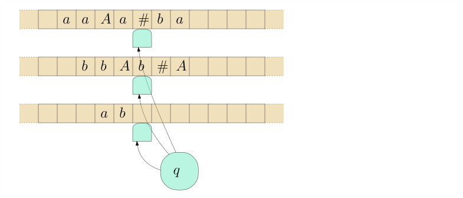
course-TI-2/public/img/turing-machines/example-3-multitape/01.svg course-TI-2/public/img/turing-machines/example-3-multitape/02.svg
course-TI-2/public/img/turing-machines/example-3-multitape/02.svg
course-TI-2/public/img/turing-machines/example-3-multitape/03.svg
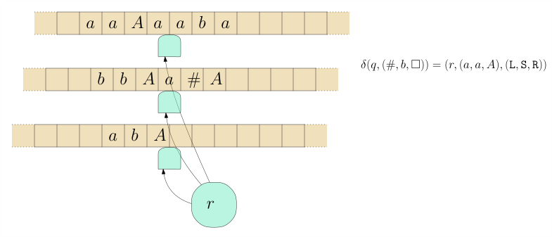
course-TI-2/public/img/turing-machines/example-3-multitape/04.svg course-TI-2/public/img/turing-machines/example-3-multitape/05.svg
course-TI-2/public/img/turing-machines/example-3-multitape/05.svg
Beispiel 8.3.1./course-TI-2/wly/08/03-Turing-machine-variants.wly:50:5 ./course-TI-2/wly/08/03-Turing-machine-variants.wly:50:5 Entwerfen wir nun eine Turingmaschine für die./course-TI-2/wly/08/03-Turing-machine-variants.wly:51:9 Palindromsprache./course-TI-2/wly/08/03-Turing-machine-variants.wly:52:9
$$
\begin{align*}
L := \{ w \in \{a,b\}^* \ | \ w = w^R \} \ ,
\end{align*}
$$./course-TI-2/wly/08/03-Turing-machine-variants.wly:54:9
In ./course-TI-2/wly/08/03-Turing-machine-variants.wly:58:9Beispiel 8.2.2 haben wir dafür./course-TI-2/wly/08/03-Turing-machine-variants.wly:58:9 eine Einband-Turingmaschine geschrieben. Deren./course-TI-2/wly/08/03-Turing-machine-variants.wly:59:9 Nachteil war, dass sie ständig zwischen dem linken und./course-TI-2/wly/08/03-Turing-machine-variants.wly:60:9 rechten Rand hin-und-herlaufen musste. Bauen wir nun./course-TI-2/wly/08/03-Turing-machine-variants.wly:61:9 eine Mehrband-Turingmaschine. Diese arbeitet in drei./course-TI-2/wly/08/03-Turing-machine-variants.wly:62:9 einfachen und kurzen Phasen:./course-TI-2/wly/08/03-Turing-machine-variants.wly:63:9
-
copy./course-TI-2/wly/08/03-Turing-machine-variants.wly:67:18:./course-TI-2/wly/08/03-Turing-machine-variants.wly:67:23 kopiert das ./course-TI-2/wly/08/03-Turing-machine-variants.wly:67:23$w$./course-TI-2/wly/08/03-Turing-machine-variants.wly:67:37 auf das zweite Band./course-TI-2/wly/08/03-Turing-machine-variants.wly:67:40 -
rewind./course-TI-2/wly/08/03-Turing-machine-variants.wly:70:18:./course-TI-2/wly/08/03-Turing-machine-variants.wly:70:25 bewegt den Kopf des ersten Bandes zurück./course-TI-2/wly/08/03-Turing-machine-variants.wly:70:25 zum Anfang./course-TI-2/wly/08/03-Turing-machine-variants.wly:71:17 -
compare./course-TI-2/wly/08/03-Turing-machine-variants.wly:74:18:./course-TI-2/wly/08/03-Turing-machine-variants.wly:74:26 schaut, ob erstes und zweites Band den./course-TI-2/wly/08/03-Turing-machine-variants.wly:74:26 gleichen Inhalt haben../course-TI-2/wly/08/03-Turing-machine-variants.wly:75:17
Den "Quelltext" für./course-TI-2/wly/08/03-Turing-machine-variants.wly:77:9 ./course-TI-2/wly/08/03-Turing-machine-variants.wly:78:9turingmachinesimulator.com./course-TI-2/wly/08/03-Turing-machine-variants.wly:78:10 ./course-TI-2/wly/08/03-Turing-machine-variants.wly:78:73 finden Sie in./course-TI-2/wly/08/03-Turing-machine-variants.wly:79:9 ./course-TI-2/wly/08/03-Turing-machine-variants.wly:80:9palindrome-multiple-tapes.txt./course-TI-2/wly/08/03-Turing-machine-variants.wly:80:10../course-TI-2/wly/08/03-Turing-machine-variants.wly:80:96
Übungsaufgabe 8.3.1./course-TI-2/wly/08/03-Turing-machine-variants.wly:82:5
./course-TI-2/wly/08/03-Turing-machine-variants.wly:82:5
Schreiben Sie eine Mehrband-Turingmaschine, die./course-TI-2/wly/08/03-Turing-machine-variants.wly:83:9
Binärzahlen addiert. Wenn also beispielsweise./course-TI-2/wly/08/03-Turing-machine-variants.wly:84:9
./course-TI-2/wly/08/03-Turing-machine-variants.wly:85:91010+110./course-TI-2/wly/08/03-Turing-machine-variants.wly:85:10
auf dem ersten Band (Eingabeband) steht,./course-TI-2/wly/08/03-Turing-machine-variants.wly:85:19
dann soll nach Abschluss der Berechnung das Ergebnis./course-TI-2/wly/08/03-Turing-machine-variants.wly:86:9
auf dem Ausgabeband stehen, also
./course-TI-2/wly/08/03-Turing-machine-variants.wly:87:910000./course-TI-2/wly/08/03-Turing-machine-variants.wly:87:43../course-TI-2/wly/08/03-Turing-machine-variants.wly:87:49
./course-TI-2/wly/08/03-Turing-machine-variants.wly:87:49Tip../course-TI-2/wly/08/03-Turing-machine-variants.wly:87:52
./course-TI-2/wly/08/03-Turing-machine-variants.wly:87:57
Verwenden Sie drei Bänder. Sei der Bandinhalt
./course-TI-2/wly/08/03-Turing-machine-variants.wly:88:9$x+y$./course-TI-2/wly/08/03-Turing-machine-variants.wly:88:55../course-TI-2/wly/08/03-Turing-machine-variants.wly:88:60
./course-TI-2/wly/08/03-Turing-machine-variants.wly:88:60
In einer ersten Phase kopieren Sie
./course-TI-2/wly/08/03-Turing-machine-variants.wly:89:9$x$./course-TI-2/wly/08/03-Turing-machine-variants.wly:89:44
auf das zweite./course-TI-2/wly/08/03-Turing-machine-variants.wly:89:47
Band. In der nächsten Phase gehen Sie ans Ende von./course-TI-2/wly/08/03-Turing-machine-variants.wly:90:9
./course-TI-2/wly/08/03-Turing-machine-variants.wly:91:9$y$./course-TI-2/wly/08/03-Turing-machine-variants.wly:91:9../course-TI-2/wly/08/03-Turing-machine-variants.wly:91:12
Dann addieren Sie nach den Regeln der./course-TI-2/wly/08/03-Turing-machine-variants.wly:91:12
Binäraddition. Ob "1 gemerkt" gilt oder nicht, können./course-TI-2/wly/08/03-Turing-machine-variants.wly:92:9
Sie in Ihrem internen Zustand speichern. Eine Regel./course-TI-2/wly/08/03-Turing-machine-variants.wly:93:9
wäre also zum Beispiel:./course-TI-2/wly/08/03-Turing-machine-variants.wly:94:9
carry1, 0, 0, _./course-TI-2/wly/08/03-Turing-machine-variants.wly:97:9 carry0, 0, 0, 1,<,<,<./course-TI-2/wly/08/03-Turing-machine-variants.wly:98:9 carry1, 0, 1, _./course-TI-2/wly/08/03-Turing-machine-variants.wly:99:9 carry1, 0, 1, 0,<,<,<./course-TI-2/wly/08/03-Turing-machine-variants.wly:100:9
Ein lästiges Detail ist, dass
./course-TI-2/wly/08/03-Turing-machine-variants.wly:103:9$y$./course-TI-2/wly/08/03-Turing-machine-variants.wly:103:39
kürzer sein könnte./course-TI-2/wly/08/03-Turing-machine-variants.wly:103:42
als
./course-TI-2/wly/08/03-Turing-machine-variants.wly:104:9$x$./course-TI-2/wly/08/03-Turing-machine-variants.wly:104:13
und Sie daher in das
./course-TI-2/wly/08/03-Turing-machine-variants.wly:104:16+./course-TI-2/wly/08/03-Turing-machine-variants.wly:104:39
reinlaufen könnten;./course-TI-2/wly/08/03-Turing-machine-variants.wly:104:41
wenn
./course-TI-2/wly/08/03-Turing-machine-variants.wly:105:9$x$./course-TI-2/wly/08/03-Turing-machine-variants.wly:105:14
kürzer ist als
./course-TI-2/wly/08/03-Turing-machine-variants.wly:105:17$y$./course-TI-2/wly/08/03-Turing-machine-variants.wly:105:33,./course-TI-2/wly/08/03-Turing-machine-variants.wly:105:36
dann könnten Sie auf dem./course-TI-2/wly/08/03-Turing-machine-variants.wly:105:36
zweiten Band in ein
./course-TI-2/wly/08/03-Turing-machine-variants.wly:106:9$\square$./course-TI-2/wly/08/03-Turing-machine-variants.wly:106:29
reinlaufen. Wie ist./course-TI-2/wly/08/03-Turing-machine-variants.wly:106:38
dieser Fall zu behandeln?./course-TI-2/wly/08/03-Turing-machine-variants.wly:107:9
Berechnete Sprache, berechnete Funktion../course-TI-2/wly/08/03-Turing-machine-variants.wly:109:6 Die./course-TI-2/wly/08/03-Turing-machine-variants.wly:109:47 Begriffe des Akzpetierens und Ablehnens definieren wir./course-TI-2/wly/08/03-Turing-machine-variants.wly:110:5 genau wie für die Einband-Turingmaschinen. Eine./course-TI-2/wly/08/03-Turing-machine-variants.wly:111:5 formale Definition der Konfiguration ersparen wir uns./course-TI-2/wly/08/03-Turing-machine-variants.wly:112:5 jedoch. Wenn unsere Mehrband-Turingmaschine nicht nur./course-TI-2/wly/08/03-Turing-machine-variants.wly:113:5 akzeptieren / ablehnen, sondern etwas ./course-TI-2/wly/08/03-Turing-machine-variants.wly:114:5berechnen./course-TI-2/wly/08/03-Turing-machine-variants.wly:114:44 ./course-TI-2/wly/08/03-Turing-machine-variants.wly:114:54 soll, also eine Funktion./course-TI-2/wly/08/03-Turing-machine-variants.wly:115:5
$$
\begin{align*}
f :
\Sigma_1 \rightarrow \Sigma_2 \ ,
\end{align*}
$$./course-TI-2/wly/08/03-Turing-machine-variants.wly:117:5
dann bauen wir sie per Konvention so, dass sie ein./course-TI-2/wly/08/03-Turing-machine-variants.wly:122:5 designiertes Ausgabeband hat, auf dem nach Abschluss./course-TI-2/wly/08/03-Turing-machine-variants.wly:123:5 der Berechnung das Ausgabewort ./course-TI-2/wly/08/03-Turing-machine-variants.wly:124:5$f(x)$./course-TI-2/wly/08/03-Turing-machine-variants.wly:124:36 steht../course-TI-2/wly/08/03-Turing-machine-variants.wly:124:42
Einband-Maschinen können Mehrband-Maschinen./course-TI-2/wly/08/03-Turing-machine-variants.wly:127:9 simulieren./course-TI-2/wly/08/03-Turing-machine-variants.wly:128:9
Es stellt sich heraus, dass mehrere Bänder zwar ein./course-TI-2/wly/08/03-Turing-machine-variants.wly:130:5 praktisches Feature sind, aber nicht wirklich mehr./course-TI-2/wly/08/03-Turing-machine-variants.wly:131:5 Ausdruckskraft verlangen; was eine./course-TI-2/wly/08/03-Turing-machine-variants.wly:132:5 Mehrband-Turingmaschine schafft, schafft eine./course-TI-2/wly/08/03-Turing-machine-variants.wly:133:5 Einband-Turingmaschine auch../course-TI-2/wly/08/03-Turing-machine-variants.wly:134:5
Theorem 8.3.2 (Einband-Turingmaschine simuliert./course-TI-2/wly/08/03-Turing-machine-variants.wly:136:5 Mehrband-Turingmaschine)./course-TI-2/wly/08/03-Turing-machine-variants.wly:139:9../course-TI-2/wly/08/03-Turing-machine-variants.wly:139:34 Sei ./course-TI-2/wly/08/03-Turing-machine-variants.wly:139:34$M$./course-TI-2/wly/08/03-Turing-machine-variants.wly:139:40 eine./course-TI-2/wly/08/03-Turing-machine-variants.wly:139:43 Turingmaschine mit ./course-TI-2/wly/08/03-Turing-machine-variants.wly:140:9$k$./course-TI-2/wly/08/03-Turing-machine-variants.wly:140:28 Bändern, wovon eines ein./course-TI-2/wly/08/03-Turing-machine-variants.wly:140:31 designiertes Ausgabeband ist. Dann gibt es eine./course-TI-2/wly/08/03-Turing-machine-variants.wly:141:9 Einband-Turingmaschine ./course-TI-2/wly/08/03-Turing-machine-variants.wly:142:9$M'$./course-TI-2/wly/08/03-Turing-machine-variants.wly:142:32 mit folgenden./course-TI-2/wly/08/03-Turing-machine-variants.wly:142:36 Eigenschaften:./course-TI-2/wly/08/03-Turing-machine-variants.wly:143:9
-
$M'(x)$./course-TI-2/wly/08/03-Turing-machine-variants.wly:147:17 akzeptiert/lehnt ab/terminiert nicht genau./course-TI-2/wly/08/03-Turing-machine-variants.wly:147:24 dann, wenn ./course-TI-2/wly/08/03-Turing-machine-variants.wly:148:17$M(x)$./course-TI-2/wly/08/03-Turing-machine-variants.wly:148:28 akzeptiert/ablehnt/nicht./course-TI-2/wly/08/03-Turing-machine-variants.wly:148:34 terminiert../course-TI-2/wly/08/03-Turing-machine-variants.wly:149:17
-
Wenn ./course-TI-2/wly/08/03-Turing-machine-variants.wly:152:17$M(x)$./course-TI-2/wly/08/03-Turing-machine-variants.wly:152:22 akzeptiert und ./course-TI-2/wly/08/03-Turing-machine-variants.wly:152:28$y$./course-TI-2/wly/08/03-Turing-machine-variants.wly:152:44 der Bandinhalt des./course-TI-2/wly/08/03-Turing-machine-variants.wly:152:47 Ausgabebandes ist, dann akzeptiert ./course-TI-2/wly/08/03-Turing-machine-variants.wly:153:17$M'(x)$./course-TI-2/wly/08/03-Turing-machine-variants.wly:153:52 auch, und./course-TI-2/wly/08/03-Turing-machine-variants.wly:153:59 der Bandinhalt (des einzigen Bandes, es gibt ja nur./course-TI-2/wly/08/03-Turing-machine-variants.wly:154:17 eins) ist ./course-TI-2/wly/08/03-Turing-machine-variants.wly:155:17$y$./course-TI-2/wly/08/03-Turing-machine-variants.wly:155:27../course-TI-2/wly/08/03-Turing-machine-variants.wly:155:30
In anderen Worten: ./course-TI-2/wly/08/03-Turing-machine-variants.wly:157:9$M'$./course-TI-2/wly/08/03-Turing-machine-variants.wly:157:28 simuliert ./course-TI-2/wly/08/03-Turing-machine-variants.wly:157:32$M$./course-TI-2/wly/08/03-Turing-machine-variants.wly:157:43../course-TI-2/wly/08/03-Turing-machine-variants.wly:157:46
Weiterhin gilt: falls die Maschine ./course-TI-2/wly/08/03-Turing-machine-variants.wly:159:9$M$./course-TI-2/wly/08/03-Turing-machine-variants.wly:159:44 auf Eingabewörtern ./course-TI-2/wly/08/03-Turing-machine-variants.wly:159:47 der Länge ./course-TI-2/wly/08/03-Turing-machine-variants.wly:160:9$n$./course-TI-2/wly/08/03-Turing-machine-variants.wly:160:19 innerhalb von ./course-TI-2/wly/08/03-Turing-machine-variants.wly:160:22$t = t(n)$./course-TI-2/wly/08/03-Turing-machine-variants.wly:160:37 Schritten ./course-TI-2/wly/08/03-Turing-machine-variants.wly:160:47 terminiert, dann terminiert ./course-TI-2/wly/08/03-Turing-machine-variants.wly:161:9$M'$./course-TI-2/wly/08/03-Turing-machine-variants.wly:161:37 innerhalb von ./course-TI-2/wly/08/03-Turing-machine-variants.wly:161:41$O(t^2 + nt)$./course-TI-2/wly/08/03-Turing-machine-variants.wly:161:56 Schritten../course-TI-2/wly/08/03-Turing-machine-variants.wly:161:69
Beweis Der erste Trick ist, dass wir die ./course-TI-2/wly/08/03-Turing-machine-variants.wly:164:9$k$./course-TI-2/wly/08/03-Turing-machine-variants.wly:164:43 Bänder von ./course-TI-2/wly/08/03-Turing-machine-variants.wly:164:46$M$./course-TI-2/wly/08/03-Turing-machine-variants.wly:164:58 ./course-TI-2/wly/08/03-Turing-machine-variants.wly:164:61 "zusammenkleben" in ein neues Band, in welcher jede./course-TI-2/wly/08/03-Turing-machine-variants.wly:165:9 Zelle ./course-TI-2/wly/08/03-Turing-machine-variants.wly:166:9$k$./course-TI-2/wly/08/03-Turing-machine-variants.wly:166:15 Symbole enthalten kann:./course-TI-2/wly/08/03-Turing-machine-variants.wly:166:18
 course-TI-2/public/img/turing-machines/example-3-multitape/multitape-to-onetape.svg
course-TI-2/public/img/turing-machines/example-3-multitape/multitape-to-onetape.svg
Das Problem sind nun die Köpfe. Wenn wir diese Idee./course-TI-2/wly/08/03-Turing-machine-variants.wly:173:9 naiv umsetzen würden, hätte unsere Maschine ./course-TI-2/wly/08/03-Turing-machine-variants.wly:174:9$M'$./course-TI-2/wly/08/03-Turing-machine-variants.wly:174:53 zwar./course-TI-2/wly/08/03-Turing-machine-variants.wly:174:57 ein Band, dafür drei Köpfe auf diesem:./course-TI-2/wly/08/03-Turing-machine-variants.wly:175:9
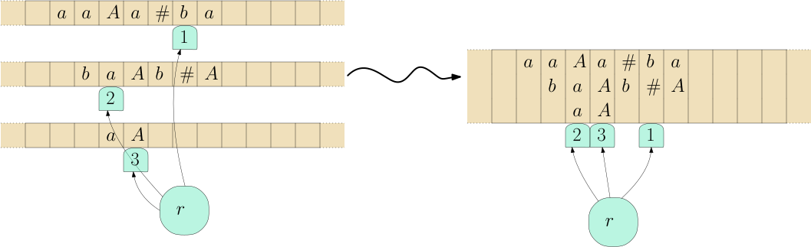
course-TI-2/public/img/turing-machines/example-3-multitape/multitape-to-onetape-three-heads.svgWir lösen dies, indem wir die Kopfpositionen in das./course-TI-2/wly/08/03-Turing-machine-variants.wly:182:9 Band selbst reinschreiben:./course-TI-2/wly/08/03-Turing-machine-variants.wly:183:9
 course-TI-2/public/img/turing-machines/example-3-multitape/multitape-to-onetape-one-head.svg
course-TI-2/public/img/turing-machines/example-3-multitape/multitape-to-onetape-one-head.svg
Das neue Bandalphabet ist also nicht ./course-TI-2/wly/08/03-Turing-machine-variants.wly:190:9$\Gamma^k$./course-TI-2/wly/08/03-Turing-machine-variants.wly:190:46 ./course-TI-2/wly/08/03-Turing-machine-variants.wly:190:56 sondern./course-TI-2/wly/08/03-Turing-machine-variants.wly:191:9 ./course-TI-2/wly/08/03-Turing-machine-variants.wly:192:9$(\Gamma \times \{\texttt{head}, \texttt{nohead}\} )^k$./course-TI-2/wly/08/03-Turing-machine-variants.wly:192:9../course-TI-2/wly/08/03-Turing-machine-variants.wly:193:13 ./course-TI-2/wly/08/03-Turing-machine-variants.wly:193:13 Wo steht nun aber denn der Kopf von ./course-TI-2/wly/08/03-Turing-machine-variants.wly:194:9$M'$./course-TI-2/wly/08/03-Turing-machine-variants.wly:194:45?./course-TI-2/wly/08/03-Turing-machine-variants.wly:194:49 Jetzt kommt./course-TI-2/wly/08/03-Turing-machine-variants.wly:194:49 der schwierige Teil: um ./course-TI-2/wly/08/03-Turing-machine-variants.wly:195:9einen./course-TI-2/wly/08/03-Turing-machine-variants.wly:195:34 Schritt von ./course-TI-2/wly/08/03-Turing-machine-variants.wly:195:40$M$./course-TI-2/wly/08/03-Turing-machine-variants.wly:195:53 zu./course-TI-2/wly/08/03-Turing-machine-variants.wly:195:56 simulieren, muss ./course-TI-2/wly/08/03-Turing-machine-variants.wly:196:9$M'$./course-TI-2/wly/08/03-Turing-machine-variants.wly:196:26 von ganz links nach ganz rechts./course-TI-2/wly/08/03-Turing-machine-variants.wly:196:30 laufen und alle Informationen über die ./course-TI-2/wly/08/03-Turing-machine-variants.wly:197:9$k$./course-TI-2/wly/08/03-Turing-machine-variants.wly:197:48 ./course-TI-2/wly/08/03-Turing-machine-variants.wly:197:51$M$./course-TI-2/wly/08/03-Turing-machine-variants.wly:197:52-Köpfe./course-TI-2/wly/08/03-Turing-machine-variants.wly:197:55 ./course-TI-2/wly/08/03-Turing-machine-variants.wly:197:55 sammeln. Dann von rechts nach links gehen und die./course-TI-2/wly/08/03-Turing-machine-variants.wly:198:9 ausführen../course-TI-2/wly/08/03-Turing-machine-variants.wly:199:9
 course-TI-2/public/img/turing-machines/one-simulates-multi/01-01.svg
course-TI-2/public/img/turing-machines/one-simulates-multi/01-01.svg
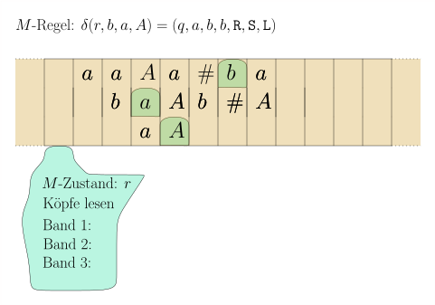
course-TI-2/public/img/turing-machines/one-simulates-multi/02-01.svg course-TI-2/public/img/turing-machines/one-simulates-multi/02-02.svg
course-TI-2/public/img/turing-machines/one-simulates-multi/02-02.svg
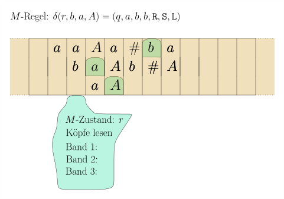
course-TI-2/public/img/turing-machines/one-simulates-multi/02-03.svg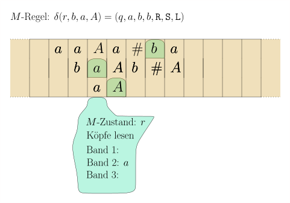
course-TI-2/public/img/turing-machines/one-simulates-multi/02-04.svg course-TI-2/public/img/turing-machines/one-simulates-multi/02-05.svg
course-TI-2/public/img/turing-machines/one-simulates-multi/02-05.svg
 course-TI-2/public/img/turing-machines/one-simulates-multi/02-06.svg
course-TI-2/public/img/turing-machines/one-simulates-multi/02-06.svg
 course-TI-2/public/img/turing-machines/one-simulates-multi/02-07.svg
course-TI-2/public/img/turing-machines/one-simulates-multi/02-07.svg
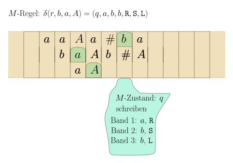
course-TI-2/public/img/turing-machines/one-simulates-multi/02-08.svg course-TI-2/public/img/turing-machines/one-simulates-multi/03-01.svg
course-TI-2/public/img/turing-machines/one-simulates-multi/03-01.svg
course-TI-2/public/img/turing-machines/one-simulates-multi/03-02.svg
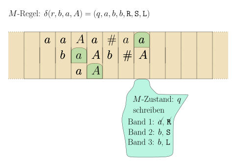
course-TI-2/public/img/turing-machines/one-simulates-multi/04-01.svg course-TI-2/public/img/turing-machines/one-simulates-multi/04-02.svg
course-TI-2/public/img/turing-machines/one-simulates-multi/04-02.svg
 course-TI-2/public/img/turing-machines/one-simulates-multi/04-03.svg
course-TI-2/public/img/turing-machines/one-simulates-multi/04-03.svg
 course-TI-2/public/img/turing-machines/one-simulates-multi/04-04.svg
course-TI-2/public/img/turing-machines/one-simulates-multi/04-04.svg
 course-TI-2/public/img/turing-machines/one-simulates-multi/05-01.svg
course-TI-2/public/img/turing-machines/one-simulates-multi/05-01.svg
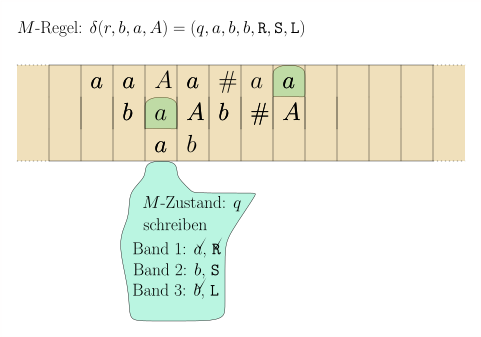
course-TI-2/public/img/turing-machines/one-simulates-multi/05-02.svg
course-TI-2/public/img/turing-machines/one-simulates-multi/06-01.svg
 course-TI-2/public/img/turing-machines/one-simulates-multi/07-01.svg
course-TI-2/public/img/turing-machines/one-simulates-multi/07-01.svg
 course-TI-2/public/img/turing-machines/one-simulates-multi/08-01.svg
course-TI-2/public/img/turing-machines/one-simulates-multi/08-01.svg
Wir müssen also die Zustandsmenge deutlich erweitern;./course-TI-2/wly/08/03-Turing-machine-variants.wly:224:9
so muss sie speichern können, ob wir ein Symbol./course-TI-2/wly/08/03-Turing-machine-variants.wly:225:9
bereits gelesen haben; ob wir ein Symbol bereits./course-TI-2/wly/08/03-Turing-machine-variants.wly:226:9
geschrieben haben und ob wir den Kopf bereits./course-TI-2/wly/08/03-Turing-machine-variants.wly:227:9
entsprechend verschoben haben. Für eine./course-TI-2/wly/08/03-Turing-machine-variants.wly:228:9
Rechtsverschiebung müssen wir uns zusätzlich noch./course-TI-2/wly/08/03-Turing-machine-variants.wly:229:9
merken, dass wir sie gerade durchführen und für./course-TI-2/wly/08/03-Turing-machine-variants.wly:230:9
welches Band. All dies ist viel, aber immer noch./course-TI-2/wly/08/03-Turing-machine-variants.wly:231:9
endlich. Wir können alles in einer endlichen./course-TI-2/wly/08/03-Turing-machine-variants.wly:232:9
Zustandsmenge
./course-TI-2/wly/08/03-Turing-machine-variants.wly:233:9$Q'$./course-TI-2/wly/08/03-Turing-machine-variants.wly:233:23
speichern. Wenn der
./course-TI-2/wly/08/03-Turing-machine-variants.wly:233:27$M$./course-TI-2/wly/08/03-Turing-machine-variants.wly:233:48
-Zustand./course-TI-2/wly/08/03-Turing-machine-variants.wly:233:51
(der natürlich auch im
./course-TI-2/wly/08/03-Turing-machine-variants.wly:234:9$M'$./course-TI-2/wly/08/03-Turing-machine-variants.wly:234:32-Zustand./course-TI-2/wly/08/03-Turing-machine-variants.wly:234:36
gespeichert./course-TI-2/wly/08/03-Turing-machine-variants.wly:234:36
./course-TI-2/wly/08/03-Turing-machine-variants.wly:235:9ist),./course-TI-2/wly/08/03-Turing-machine-variants.wly:235:9accept./course-TI-2/wly/08/03-Turing-machine-variants.wly:235:15erreicht./course-TI-2/wly/08/03-Turing-machine-variants.wly:235:22
hat, dann macht
./course-TI-2/wly/08/03-Turing-machine-variants.wly:235:22$M'$./course-TI-2/wly/08/03-Turing-machine-variants.wly:235:47
noch eine./course-TI-2/wly/08/03-Turing-machine-variants.wly:235:51
Aufräumphase, in welcher sie alle Symbole, die nicht./course-TI-2/wly/08/03-Turing-machine-variants.wly:236:9
zum Ausgabeband gehören, durch
./course-TI-2/wly/08/03-Turing-machine-variants.wly:237:9$\square$./course-TI-2/wly/08/03-Turing-machine-variants.wly:237:40
ersetzt../course-TI-2/wly/08/03-Turing-machine-variants.wly:237:49
Dann wechselt sie in ihren eigenen akzeptierenden./course-TI-2/wly/08/03-Turing-machine-variants.wly:238:9
Zustand
./course-TI-2/wly/08/03-Turing-machine-variants.wly:239:9accept'./course-TI-2/wly/08/03-Turing-machine-variants.wly:239:18../course-TI-2/wly/08/03-Turing-machine-variants.wly:239:26
Um die Laufzeit von ./course-TI-2/wly/08/03-Turing-machine-variants.wly:241:9$M'$./course-TI-2/wly/08/03-Turing-machine-variants.wly:241:29 zu messen, betrachten wir, wie lange ./course-TI-2/wly/08/03-Turing-machine-variants.wly:241:33 es dauert, ./course-TI-2/wly/08/03-Turing-machine-variants.wly:242:9einen./course-TI-2/wly/08/03-Turing-machine-variants.wly:242:21 Schritt von ./course-TI-2/wly/08/03-Turing-machine-variants.wly:242:27$M$./course-TI-2/wly/08/03-Turing-machine-variants.wly:242:40 zu simulieren. Die Maschine ./course-TI-2/wly/08/03-Turing-machine-variants.wly:242:43 ./course-TI-2/wly/08/03-Turing-machine-variants.wly:243:9$M'$./course-TI-2/wly/08/03-Turing-machine-variants.wly:243:9 muss zweimal die Bänder von ./course-TI-2/wly/08/03-Turing-machine-variants.wly:243:13$M$./course-TI-2/wly/08/03-Turing-machine-variants.wly:243:42 von einem Ende zum anderen ./course-TI-2/wly/08/03-Turing-machine-variants.wly:243:45 ablaufen. Da ./course-TI-2/wly/08/03-Turing-machine-variants.wly:244:9$M$./course-TI-2/wly/08/03-Turing-machine-variants.wly:244:22 selbst maximal ./course-TI-2/wly/08/03-Turing-machine-variants.wly:244:25$t$./course-TI-2/wly/08/03-Turing-machine-variants.wly:244:41 Schritte läuft, können pro ./course-TI-2/wly/08/03-Turing-machine-variants.wly:244:44 Band maximal ./course-TI-2/wly/08/03-Turing-machine-variants.wly:245:9$n + t$./course-TI-2/wly/08/03-Turing-machine-variants.wly:245:22 Symbole stehen: im schlimmsten Falle läuft ./course-TI-2/wly/08/03-Turing-machine-variants.wly:245:29 sie auf dem Eingabeband jedes mal nach links und schreibt etwas. ./course-TI-2/wly/08/03-Turing-machine-variants.wly:246:9 Also muss ./course-TI-2/wly/08/03-Turing-machine-variants.wly:247:9$M'$./course-TI-2/wly/08/03-Turing-machine-variants.wly:247:19 maximal ./course-TI-2/wly/08/03-Turing-machine-variants.wly:247:23$O(n+t)$./course-TI-2/wly/08/03-Turing-machine-variants.wly:247:32 Schritte, um einen Schritt von ./course-TI-2/wly/08/03-Turing-machine-variants.wly:247:40$M$./course-TI-2/wly/08/03-Turing-machine-variants.wly:247:72 ./course-TI-2/wly/08/03-Turing-machine-variants.wly:247:75 zu simulieren. ./course-TI-2/wly/08/03-Turing-machine-variants.wly:248:9$M'$./course-TI-2/wly/08/03-Turing-machine-variants.wly:248:24 terminiert also innerhalb von ./course-TI-2/wly/08/03-Turing-machine-variants.wly:248:28$O(t^2 + nt)$./course-TI-2/wly/08/03-Turing-machine-variants.wly:248:59 Schritten. ./course-TI-2/wly/08/03-Turing-machine-variants.wly:248:72A\(\square\)
Einfügen versus Überschreiben./course-TI-2/wly/08/03-Turing-machine-variants.wly:251:9
Folgende Aufgabe ist auf einer Einband-Turingmaschine./course-TI-2/wly/08/03-Turing-machine-variants.wly:253:5 sehr leicht: gegeben ein Eingabewort./course-TI-2/wly/08/03-Turing-machine-variants.wly:254:5 ./course-TI-2/wly/08/03-Turing-machine-variants.wly:255:5$w \in \{a,b\}^*$./course-TI-2/wly/08/03-Turing-machine-variants.wly:255:5,./course-TI-2/wly/08/03-Turing-machine-variants.wly:255:22 ersetze jedes ./course-TI-2/wly/08/03-Turing-machine-variants.wly:255:22$b$./course-TI-2/wly/08/03-Turing-machine-variants.wly:255:38 durch ein ./course-TI-2/wly/08/03-Turing-machine-variants.wly:255:41$c$./course-TI-2/wly/08/03-Turing-machine-variants.wly:255:52../course-TI-2/wly/08/03-Turing-machine-variants.wly:255:55 ./course-TI-2/wly/08/03-Turing-machine-variants.wly:255:55 In der Syntax von./course-TI-2/wly/08/03-Turing-machine-variants.wly:256:5 ./course-TI-2/wly/08/03-Turing-machine-variants.wly:257:5turingmachinesimulator.com./course-TI-2/wly/08/03-Turing-machine-variants.wly:257:6:./course-TI-2/wly/08/03-Turing-machine-variants.wly:257:69
name: replace_b_by_c./course-TI-2/wly/08/03-Turing-machine-variants.wly:260:5 init: init./course-TI-2/wly/08/03-Turing-machine-variants.wly:261:5 accept: accept./course-TI-2/wly/08/03-Turing-machine-variants.wly:262:5 init, a./course-TI-2/wly/08/03-Turing-machine-variants.wly:263:5 init, a, >./course-TI-2/wly/08/03-Turing-machine-variants.wly:264:5 init, b./course-TI-2/wly/08/03-Turing-machine-variants.wly:265:5 init, c, >./course-TI-2/wly/08/03-Turing-machine-variants.wly:266:5 init, _./course-TI-2/wly/08/03-Turing-machine-variants.wly:267:5 accept, _, >./course-TI-2/wly/08/03-Turing-machine-variants.wly:268:5
Ungleich schwieriger ist die Aufgabe, jedes ./course-TI-2/wly/08/03-Turing-machine-variants.wly:271:5$b$./course-TI-2/wly/08/03-Turing-machine-variants.wly:271:49 durch./course-TI-2/wly/08/03-Turing-machine-variants.wly:271:52 ein ./course-TI-2/wly/08/03-Turing-machine-variants.wly:272:5$bc$./course-TI-2/wly/08/03-Turing-machine-variants.wly:272:9 zu ersetzen, weil wir hier etwas ./course-TI-2/wly/08/03-Turing-machine-variants.wly:272:13einfügen./course-TI-2/wly/08/03-Turing-machine-variants.wly:272:48 ./course-TI-2/wly/08/03-Turing-machine-variants.wly:272:57 wollen. Auf einer Einband-Turingmaschine müssen wir./course-TI-2/wly/08/03-Turing-machine-variants.wly:273:5 für jedes ./course-TI-2/wly/08/03-Turing-machine-variants.wly:274:5$b$./course-TI-2/wly/08/03-Turing-machine-variants.wly:274:15 alles, was rechts davon kommt, um eine./course-TI-2/wly/08/03-Turing-machine-variants.wly:274:18 Zelle nach rechts verschieben. Meinen Quelltext finden./course-TI-2/wly/08/03-Turing-machine-variants.wly:275:5 sie in./course-TI-2/wly/08/03-Turing-machine-variants.wly:276:5 ./course-TI-2/wly/08/03-Turing-machine-variants.wly:277:5replace-b-by-bc.txt./course-TI-2/wly/08/03-Turing-machine-variants.wly:277:6../course-TI-2/wly/08/03-Turing-machine-variants.wly:277:72 Können wir unserer Turingmaschine die Funktionalität./course-TI-2/wly/08/03-Turing-machine-variants.wly:278:5 geben, eine Zelle ./course-TI-2/wly/08/03-Turing-machine-variants.wly:279:5einzufügen./course-TI-2/wly/08/03-Turing-machine-variants.wly:279:24 und alles von Kopf bis./course-TI-2/wly/08/03-Turing-machine-variants.wly:279:35 zum linken Ende um eins nach links zu verschieben bzw../course-TI-2/wly/08/03-Turing-machine-variants.wly:280:5 das analoge, aber nach rechts? Wir sind freie./course-TI-2/wly/08/03-Turing-machine-variants.wly:281:5 Menschen, wir können definieren, was wir wollen,./course-TI-2/wly/08/03-Turing-machine-variants.wly:282:5 müssen uns aber zwei Fragen stellen:./course-TI-2/wly/08/03-Turing-machine-variants.wly:283:5
-
Ist das immer noch ein plausibles Modell einer./course-TI-2/wly/08/03-Turing-machine-variants.wly:287:13 Rechenmaschine? Ist also unser neue Funktionalität./course-TI-2/wly/08/03-Turing-machine-variants.wly:288:13 physikalisch realisierbar?./course-TI-2/wly/08/03-Turing-machine-variants.wly:289:13
-
Verleiht es wirklich neue Funktionalität, oder ist es./course-TI-2/wly/08/03-Turing-machine-variants.wly:292:13 nur Syntaxzucker?./course-TI-2/wly/08/03-Turing-machine-variants.wly:293:13
In diesem Fall ahnen Sie es wohl bereits: es ist nur./course-TI-2/wly/08/03-Turing-machine-variants.wly:295:5 Syntaxzucker. Die Funktionalität des./course-TI-2/wly/08/03-Turing-machine-variants.wly:296:5 ./course-TI-2/wly/08/03-Turing-machine-variants.wly:297:5Einfügens/Verschiebens./course-TI-2/wly/08/03-Turing-machine-variants.wly:297:6 können wir leicht mit zwei./course-TI-2/wly/08/03-Turing-machine-variants.wly:297:29 Bändern simulieren. Wir halten uns einfach an die./course-TI-2/wly/08/03-Turing-machine-variants.wly:298:5 Konvention, dass auf Band 1 der Kopf immer auf dem./course-TI-2/wly/08/03-Turing-machine-variants.wly:299:5 linkesten Zeichen steht und auf Band 2 der Kopf./course-TI-2/wly/08/03-Turing-machine-variants.wly:300:5 jenseits des rechtesten../course-TI-2/wly/08/03-Turing-machine-variants.wly:301:5
$$
\begin{align*}
\delta(q,x) = (r,y,\texttt{R})
\end{align*}
$$./course-TI-2/wly/08/03-Turing-machine-variants.wly:303:5
wird dann./course-TI-2/wly/08/03-Turing-machine-variants.wly:307:5
q, x, _./course-TI-2/wly/08/03-Turing-machine-variants.wly:310:5 r, _, x, >, >./course-TI-2/wly/08/03-Turing-machine-variants.wly:311:5
Eine Linksbewegung ist etwas schwieriger zu./course-TI-2/wly/08/03-Turing-machine-variants.wly:314:5 implementieren. Aus ./course-TI-2/wly/08/03-Turing-machine-variants.wly:315:5$\delta(q,x) = (r,y,\texttt{L})$./course-TI-2/wly/08/03-Turing-machine-variants.wly:315:25 ./course-TI-2/wly/08/03-Turing-machine-variants.wly:315:57 wird./course-TI-2/wly/08/03-Turing-machine-variants.wly:316:5
q, x, _./course-TI-2/wly/08/03-Turing-machine-variants.wly:319:5 r', x, _, -, -./course-TI-2/wly/08/03-Turing-machine-variants.wly:320:5 r', _, c./course-TI-2/wly/08/03-Turing-machine-variants.wly:321:5 r, c, _ ./course-TI-2/wly/08/03-Turing-machine-variants.wly:322:5// für jedes Zeichen c./course-TI-2/wly/08/03-Turing-machine-variants.wly:322:18
Nehmen Sie die Beispielmaschine./course-TI-2/wly/08/03-Turing-machine-variants.wly:325:5 ./course-TI-2/wly/08/03-Turing-machine-variants.wly:326:5go-left-go-right.txt./course-TI-2/wly/08/03-Turing-machine-variants.wly:326:6,./course-TI-2/wly/08/03-Turing-machine-variants.wly:326:74 geben Sie sie auf./course-TI-2/wly/08/03-Turing-machine-variants.wly:327:5 ./course-TI-2/wly/08/03-Turing-machine-variants.wly:328:5turingmachinesimulator.com./course-TI-2/wly/08/03-Turing-machine-variants.wly:328:6 ./course-TI-2/wly/08/03-Turing-machine-variants.wly:328:69 ein und starten Sie sie mit dem Eingabewort ./course-TI-2/wly/08/03-Turing-machine-variants.wly:329:5$xxx$./course-TI-2/wly/08/03-Turing-machine-variants.wly:329:49../course-TI-2/wly/08/03-Turing-machine-variants.wly:329:54 ./course-TI-2/wly/08/03-Turing-machine-variants.wly:329:54 Ein neues Zeichen links vom Kopf einfügen ist nun./course-TI-2/wly/08/03-Turing-machine-variants.wly:330:5 einfach: aus./course-TI-2/wly/08/03-Turing-machine-variants.wly:331:5
$$
\begin{align*}
\delta(q,x) = \textnormal{Zustand $r$, schreibe $y$ und
füge $z$ links vom Kopf ein}
\end{align*}
$$./course-TI-2/wly/08/03-Turing-machine-variants.wly:333:5
wird./course-TI-2/wly/08/03-Turing-machine-variants.wly:338:5
q, x, _./course-TI-2/wly/08/03-Turing-machine-variants.wly:341:5 r'', _, z, >, >./course-TI-2/wly/08/03-Turing-machine-variants.wly:342:5 r'', c, _./course-TI-2/wly/08/03-Turing-machine-variants.wly:343:5 r, c, y, -, > ./course-TI-2/wly/08/03-Turing-machine-variants.wly:344:5// für jedes Zeichen c./course-TI-2/wly/08/03-Turing-machine-variants.wly:344:24
Sie können sich meine Implementierung in./course-TI-2/wly/08/03-Turing-machine-variants.wly:347:5
./course-TI-2/wly/08/03-Turing-machine-variants.wly:348:5insert-z-before-y.txt./course-TI-2/wly/08/03-Turing-machine-variants.wly:348:6
./course-TI-2/wly/08/03-Turing-machine-variants.wly:348:76
ansehen. Geben Sie beispielsweise
./course-TI-2/wly/08/03-Turing-machine-variants.wly:349:5xxyxyyxx./course-TI-2/wly/08/03-Turing-machine-variants.wly:349:40
als./course-TI-2/wly/08/03-Turing-machine-variants.wly:349:49
Eingabewort ein. Wir können von nun an also so tun,./course-TI-2/wly/08/03-Turing-machine-variants.wly:350:5
als hätten unsere Turingmaschinen die Möglichkeit,./course-TI-2/wly/08/03-Turing-machine-variants.wly:351:5
zusätzliche Zellen einzufügen. In einer konkreten./course-TI-2/wly/08/03-Turing-machine-variants.wly:352:5
Implementierung müssten wir dafür allerdings jedes./course-TI-2/wly/08/03-Turing-machine-variants.wly:353:5
Band durch zwei Bänder ersetzen. Alternativ können Sie./course-TI-2/wly/08/03-Turing-machine-variants.wly:354:5
sich eine Turingmaschine vorstellen, die statt
./course-TI-2/wly/08/03-Turing-machine-variants.wly:355:5$k$./course-TI-2/wly/08/03-Turing-machine-variants.wly:355:52
./course-TI-2/wly/08/03-Turing-machine-variants.wly:355:55
Bändern einfach
./course-TI-2/wly/08/03-Turing-machine-variants.wly:356:5$2k$./course-TI-2/wly/08/03-Turing-machine-variants.wly:356:21
Stapel hat../course-TI-2/wly/08/03-Turing-machine-variants.wly:356:25
Die Dictionary-Maschine./course-TI-2/wly/08/03-Turing-machine-variants.wly:359:9
Ein fundamentale Datenstruktur beim Programmieren./course-TI-2/wly/08/03-Turing-machine-variants.wly:361:5 sind ./course-TI-2/wly/08/03-Turing-machine-variants.wly:362:5Dictionaries./course-TI-2/wly/08/03-Turing-machine-variants.wly:362:11,./course-TI-2/wly/08/03-Turing-machine-variants.wly:362:24 die Key-Value-Paare speichern:./course-TI-2/wly/08/03-Turing-machine-variants.wly:362:24
user@home:~$./course-TI-2/wly/08/03-Turing-machine-variants.wly:365:5 python -i./course-TI-2/wly/08/03-Turing-machine-variants.wly:365:17 >>>./course-TI-2/wly/08/03-Turing-machine-variants.wly:366:5 dict = {"karl" : 42, "eva" : 35, "werner" : 20}./course-TI-2/wly/08/03-Turing-machine-variants.wly:366:8 >>>./course-TI-2/wly/08/03-Turing-machine-variants.wly:367:5 dict["eva"]./course-TI-2/wly/08/03-Turing-machine-variants.wly:367:8 35./course-TI-2/wly/08/03-Turing-machine-variants.wly:368:5 >>>./course-TI-2/wly/08/03-Turing-machine-variants.wly:369:5
Im Zweifelsfall sind diese als Hashmaps oder./course-TI-2/wly/08/03-Turing-machine-variants.wly:372:5 Rot-Schwarz-Bäume oder B-Bäume implementiert. Hier./course-TI-2/wly/08/03-Turing-machine-variants.wly:373:5 interessiert uns nicht so sehr die Laufzeit, sondern./course-TI-2/wly/08/03-Turing-machine-variants.wly:374:5 einfach die Funktionalität. Können wir für./course-TI-2/wly/08/03-Turing-machine-variants.wly:375:5 Dictionaries eine Turingmaschine implementieren?./course-TI-2/wly/08/03-Turing-machine-variants.wly:376:5
Übungsaufgabe 8.3.2./course-TI-2/wly/08/03-Turing-machine-variants.wly:378:5 ./course-TI-2/wly/08/03-Turing-machine-variants.wly:378:5 Schreiben Sie auf./course-TI-2/wly/08/03-Turing-machine-variants.wly:379:9 ./course-TI-2/wly/08/03-Turing-machine-variants.wly:380:9turingmachinesimulator.com./course-TI-2/wly/08/03-Turing-machine-variants.wly:380:10 ./course-TI-2/wly/08/03-Turing-machine-variants.wly:380:73 eine Mehrband-Turingmaschine, die Inputs der Form./course-TI-2/wly/08/03-Turing-machine-variants.wly:381:9
$$
\begin{align*}
k [ k_1 : v_1; k_2 : v_2; \dots ; k_n : v_n ]
\end{align*}
$$./course-TI-2/wly/08/03-Turing-machine-variants.wly:383:9
entgegennimmt, für./course-TI-2/wly/08/03-Turing-machine-variants.wly:387:9 ./course-TI-2/wly/08/03-Turing-machine-variants.wly:388:9$k, k_1, \dots, k_n, v_1, \dots, v_n \in \{0,1\}^n$./course-TI-2/wly/08/03-Turing-machine-variants.wly:388:9,./course-TI-2/wly/08/03-Turing-machine-variants.wly:388:60 ./course-TI-2/wly/08/03-Turing-machine-variants.wly:388:60 also./course-TI-2/wly/08/03-Turing-machine-variants.wly:389:9 ./course-TI-2/wly/08/03-Turing-machine-variants.wly:390:9$\Sigma = \{0,1, \texttt{:}, \texttt{;}, \texttt{[}, \texttt{]}\}$./course-TI-2/wly/08/03-Turing-machine-variants.wly:390:9 ./course-TI-2/wly/08/03-Turing-machine-variants.wly:391:22 und akzeptiert, wenn es ein ./course-TI-2/wly/08/03-Turing-machine-variants.wly:392:9$i$./course-TI-2/wly/08/03-Turing-machine-variants.wly:392:37 gibt mit ./course-TI-2/wly/08/03-Turing-machine-variants.wly:392:40$k = k_i$./course-TI-2/wly/08/03-Turing-machine-variants.wly:392:50 ./course-TI-2/wly/08/03-Turing-machine-variants.wly:392:59 und in diesem Falle ./course-TI-2/wly/08/03-Turing-machine-variants.wly:393:9$v_i$./course-TI-2/wly/08/03-Turing-machine-variants.wly:393:29 auf das Ausgabeband./course-TI-2/wly/08/03-Turing-machine-variants.wly:393:34 schreibt. ./course-TI-2/wly/08/03-Turing-machine-variants.wly:394:9Tip:./course-TI-2/wly/08/03-Turing-machine-variants.wly:394:20 Kopieren Sie erst einmal den./course-TI-2/wly/08/03-Turing-machine-variants.wly:394:25 gesuchten Schlüssel ./course-TI-2/wly/08/03-Turing-machine-variants.wly:395:9$k$./course-TI-2/wly/08/03-Turing-machine-variants.wly:395:29 auf das zweite Band. Dann./course-TI-2/wly/08/03-Turing-machine-variants.wly:395:32 können Sie bequem den Schlüssel ./course-TI-2/wly/08/03-Turing-machine-variants.wly:396:9$k_i$./course-TI-2/wly/08/03-Turing-machine-variants.wly:396:41 auf dem ersten./course-TI-2/wly/08/03-Turing-machine-variants.wly:396:46 Band mit dem auf dem zweiten Band vergleichen. Wenn./course-TI-2/wly/08/03-Turing-machine-variants.wly:397:9 Sie es sich einfach machen wollen, nehmen Sie einfach./course-TI-2/wly/08/03-Turing-machine-variants.wly:398:9 mal an, dass alle Schlüssel gleiche Länge haben. Das./course-TI-2/wly/08/03-Turing-machine-variants.wly:399:9 erspart Ihnen gefühlt 20 Zeilen im Programmcode der./course-TI-2/wly/08/03-Turing-machine-variants.wly:400:9 Turingmaschine../course-TI-2/wly/08/03-Turing-machine-variants.wly:401:9
Nichtdeterministische Turingmaschinen./course-TI-2/wly/08/03-Turing-machine-variants.wly:404:9
Bereits im Kapitel über reguläre Sprachen haben wir./course-TI-2/wly/08/03-Turing-machine-variants.wly:406:5 gesehen, dass Nichtdeterminismus hilfreich ist, wenn./course-TI-2/wly/08/03-Turing-machine-variants.wly:407:5 wir Dinge beschreiben wollen, auch wenn es kein./course-TI-2/wly/08/03-Turing-machine-variants.wly:408:5 realistisches Modell für Rechenmaschinen darstellt../course-TI-2/wly/08/03-Turing-machine-variants.wly:409:5 Die Sprache aller Wörter über ./course-TI-2/wly/08/03-Turing-machine-variants.wly:410:5$\{a,b\}$./course-TI-2/wly/08/03-Turing-machine-variants.wly:410:35 , die das./course-TI-2/wly/08/03-Turing-machine-variants.wly:410:44 Teilwort ./course-TI-2/wly/08/03-Turing-machine-variants.wly:411:5$aababaa$./course-TI-2/wly/08/03-Turing-machine-variants.wly:411:14 enthalten, kann man beispielsweise./course-TI-2/wly/08/03-Turing-machine-variants.wly:411:23 leicht mit dem folgenden Automaten beschreiben:./course-TI-2/wly/08/03-Turing-machine-variants.wly:412:5
 course-TI-2/public/img/turing-machines/nondeterminism/aababaa.svg
course-TI-2/public/img/turing-machines/nondeterminism/aababaa.svg
Es ist klar, was dieser Automat erlaubt. Einen./course-TI-2/wly/08/03-Turing-machine-variants.wly:419:5 deterministischen Automaten für die gleiche Sprache zu./course-TI-2/wly/08/03-Turing-machine-variants.wly:420:5 entwerfen (ohne systematisch über den./course-TI-2/wly/08/03-Turing-machine-variants.wly:421:5 nichtdeterministischen zu gehen) wird schnell./course-TI-2/wly/08/03-Turing-machine-variants.wly:422:5 chaotisch, und Sie werden sich in den vielen./course-TI-2/wly/08/03-Turing-machine-variants.wly:423:5 Fallunterscheidungen verlieren. Andererseits haben wir./course-TI-2/wly/08/03-Turing-machine-variants.wly:424:5 für endliche Automaten gezeigt, dass die./course-TI-2/wly/08/03-Turing-machine-variants.wly:425:5 deterministischen und nichtdeterministischen Varianten./course-TI-2/wly/08/03-Turing-machine-variants.wly:426:5 tatsächlich gleichmächtig sind./course-TI-2/wly/08/03-Turing-machine-variants.wly:427:5 (Potenzmengenkonstruktion). Für die Kellerautomaten,./course-TI-2/wly/08/03-Turing-machine-variants.wly:428:5 die für kontextfreie Sprachen relevant sind, galt das./course-TI-2/wly/08/03-Turing-machine-variants.wly:429:5 nicht (einen Beweis haben wir allerdings in der./course-TI-2/wly/08/03-Turing-machine-variants.wly:430:5 Vorlesung nicht durchgenommen). Wie sieht es nun für./course-TI-2/wly/08/03-Turing-machine-variants.wly:431:5 Turingmaschinen aus? Um nichtdeterministische./course-TI-2/wly/08/03-Turing-machine-variants.wly:432:5 Turingmaschinen zu definieren, müssen wir die./course-TI-2/wly/08/03-Turing-machine-variants.wly:433:5 Zustandsübergangsfunktion ./course-TI-2/wly/08/03-Turing-machine-variants.wly:434:5$\delta$./course-TI-2/wly/08/03-Turing-machine-variants.wly:434:31 zu einer./course-TI-2/wly/08/03-Turing-machine-variants.wly:434:39 Zustandsübergangsrelation machen. Statt./course-TI-2/wly/08/03-Turing-machine-variants.wly:435:5 ./course-TI-2/wly/08/03-Turing-machine-variants.wly:436:5$\delta: Q \times \Gamma \rightarrow Q \times \Gamma \times \lsr$./course-TI-2/wly/08/03-Turing-machine-variants.wly:436:5 ./course-TI-2/wly/08/03-Turing-machine-variants.wly:437:17 also nun./course-TI-2/wly/08/03-Turing-machine-variants.wly:438:5
$$
\begin{align*}
\delta \subseteq (Q \times \Gamma) \times (Q \times \Gamma \times
\lsr) \ .
\end{align*}
$$./course-TI-2/wly/08/03-Turing-machine-variants.wly:440:5
Und statt ./course-TI-2/wly/08/03-Turing-machine-variants.wly:445:5$\delta(q,x) = (r,y,\texttt{D})$./course-TI-2/wly/08/03-Turing-machine-variants.wly:445:15 schreiben./course-TI-2/wly/08/03-Turing-machine-variants.wly:445:47 wir nun ./course-TI-2/wly/08/03-Turing-machine-variants.wly:446:5$(q,x) \step{\delta} (r,y,\texttt{D})$./course-TI-2/wly/08/03-Turing-machine-variants.wly:446:13../course-TI-2/wly/08/03-Turing-machine-variants.wly:446:51 Wir./course-TI-2/wly/08/03-Turing-machine-variants.wly:446:51 beschränken uns zunächst auf Einband-Turingmaschinen../course-TI-2/wly/08/03-Turing-machine-variants.wly:447:5 Für Konfigurationen./course-TI-2/wly/08/03-Turing-machine-variants.wly:448:5 ./course-TI-2/wly/08/03-Turing-machine-variants.wly:449:5$C \in \Gamma^* \times Q \times\Gamma^*$./course-TI-2/wly/08/03-Turing-machine-variants.wly:449:5 haben wir./course-TI-2/wly/08/03-Turing-machine-variants.wly:449:45 keine erweiterte Zustandsübergangsfunktion./course-TI-2/wly/08/03-Turing-machine-variants.wly:450:5 ./course-TI-2/wly/08/03-Turing-machine-variants.wly:451:5$\delta(C) = C'$./course-TI-2/wly/08/03-Turing-machine-variants.wly:451:5,./course-TI-2/wly/08/03-Turing-machine-variants.wly:451:21 wo ./course-TI-2/wly/08/03-Turing-machine-variants.wly:451:21$C'$./course-TI-2/wly/08/03-Turing-machine-variants.wly:451:26 die Folgekonfiguration ist,./course-TI-2/wly/08/03-Turing-machine-variants.wly:451:30 sondern eine erweiterte Zustandsübergangsrelation:./course-TI-2/wly/08/03-Turing-machine-variants.wly:452:5
$$
\begin{align*}
C \Step{} C'
\end{align*}
$$./course-TI-2/wly/08/03-Turing-machine-variants.wly:454:5
Wobei nun dank Nichtdeterminismus mehrere./course-TI-2/wly/08/03-Turing-machine-variants.wly:458:5 Folgekonfigurationen ./course-TI-2/wly/08/03-Turing-machine-variants.wly:459:5$C'$./course-TI-2/wly/08/03-Turing-machine-variants.wly:459:26 geben kann (oder eben mal./course-TI-2/wly/08/03-Turing-machine-variants.wly:459:30 auch gar keine). Wir schreiben./course-TI-2/wly/08/03-Turing-machine-variants.wly:460:5
$$
\begin{align*}
C \Step{}^* C'
\end{align*}
$$./course-TI-2/wly/08/03-Turing-machine-variants.wly:462:5
wenn wir von ./course-TI-2/wly/08/03-Turing-machine-variants.wly:466:5$C$./course-TI-2/wly/08/03-Turing-machine-variants.wly:466:18 in einer Folge von Schritten nach./course-TI-2/wly/08/03-Turing-machine-variants.wly:466:21 ./course-TI-2/wly/08/03-Turing-machine-variants.wly:467:5$C'$./course-TI-2/wly/08/03-Turing-machine-variants.wly:467:5 kommen können, also./course-TI-2/wly/08/03-Turing-machine-variants.wly:467:9
$$
\begin{align*}
C =
C_0 \Step{} C_1 \Step{} C_2 \Step{} \dots \Step{} C'
\end{align*}
$$./course-TI-2/wly/08/03-Turing-machine-variants.wly:469:5
Wir sagen auch: ./course-TI-2/wly/08/03-Turing-machine-variants.wly:474:5Die Konfiguration ./course-TI-2/wly/08/03-Turing-machine-variants.wly:474:22$C'$./course-TI-2/wly/08/03-Turing-machine-variants.wly:474:40 ist von ./course-TI-2/wly/08/03-Turing-machine-variants.wly:474:44$C$./course-TI-2/wly/08/03-Turing-machine-variants.wly:474:53 ./course-TI-2/wly/08/03-Turing-machine-variants.wly:474:56 aus erreichbar./course-TI-2/wly/08/03-Turing-machine-variants.wly:475:5../course-TI-2/wly/08/03-Turing-machine-variants.wly:475:20 Für ein Eingabewort ./course-TI-2/wly/08/03-Turing-machine-variants.wly:475:20$x$./course-TI-2/wly/08/03-Turing-machine-variants.wly:475:42 sie./course-TI-2/wly/08/03-Turing-machine-variants.wly:475:45 ./course-TI-2/wly/08/03-Turing-machine-variants.wly:476:5$C_x := \texttt{start} x$./course-TI-2/wly/08/03-Turing-machine-variants.wly:476:5 die Startkonfiguration../course-TI-2/wly/08/03-Turing-machine-variants.wly:476:30 Eine nichtdeterministische Turingmaschine ./course-TI-2/wly/08/03-Turing-machine-variants.wly:477:5akzeptiert./course-TI-2/wly/08/03-Turing-machine-variants.wly:477:48 ./course-TI-2/wly/08/03-Turing-machine-variants.wly:477:59 ./course-TI-2/wly/08/03-Turing-machine-variants.wly:478:5$x$./course-TI-2/wly/08/03-Turing-machine-variants.wly:478:5,./course-TI-2/wly/08/03-Turing-machine-variants.wly:478:8 wenn es eine akzeptierende Endkonfiguration./course-TI-2/wly/08/03-Turing-machine-variants.wly:478:8 ./course-TI-2/wly/08/03-Turing-machine-variants.wly:479:5$C_{\rm accept}$./course-TI-2/wly/08/03-Turing-machine-variants.wly:479:5 gibt mit./course-TI-2/wly/08/03-Turing-machine-variants.wly:479:21
$$
\begin{align*}
C_x \Step{}^* C_{\rm
accept}
\end{align*}
$$./course-TI-2/wly/08/03-Turing-machine-variants.wly:481:5
wenn es also (mindestens) eine akzeptierende./course-TI-2/wly/08/03-Turing-machine-variants.wly:486:5 Konfiguration gibt, die von ./course-TI-2/wly/08/03-Turing-machine-variants.wly:487:5$C_x$./course-TI-2/wly/08/03-Turing-machine-variants.wly:487:33 aus erreichbar ist../course-TI-2/wly/08/03-Turing-machine-variants.wly:487:38 Dabei kann es ./course-TI-2/wly/08/03-Turing-machine-variants.wly:488:5mehrere./course-TI-2/wly/08/03-Turing-machine-variants.wly:488:20 erreichbare akzeptierende./course-TI-2/wly/08/03-Turing-machine-variants.wly:488:28 Konfigurationen geben, Es kann sogar eine ablehnende./course-TI-2/wly/08/03-Turing-machine-variants.wly:489:5 Konfiguration ./course-TI-2/wly/08/03-Turing-machine-variants.wly:490:5$C_x \Step{}^* C_{\rm reject}$./course-TI-2/wly/08/03-Turing-machine-variants.wly:490:19 geben../course-TI-2/wly/08/03-Turing-machine-variants.wly:490:49 Spielt keine Rolle: solange es einen Weg./course-TI-2/wly/08/03-Turing-machine-variants.wly:491:5 ./course-TI-2/wly/08/03-Turing-machine-variants.wly:492:5$C_x \Step{}^* C_{\rm accept}$./course-TI-2/wly/08/03-Turing-machine-variants.wly:492:5 gibt, sagen wir, dass./course-TI-2/wly/08/03-Turing-machine-variants.wly:492:35 ./course-TI-2/wly/08/03-Turing-machine-variants.wly:493:5$M$./course-TI-2/wly/08/03-Turing-machine-variants.wly:493:5 das Eingabewort akzeptiert../course-TI-2/wly/08/03-Turing-machine-variants.wly:493:8
Definition 8.3.3 (Akzeptieren und Entscheiden bei./course-TI-2/wly/08/03-Turing-machine-variants.wly:495:5 nichtdeterministischen Turingmaschinen)../course-TI-2/wly/08/03-Turing-machine-variants.wly:497:9 Eine./course-TI-2/wly/08/03-Turing-machine-variants.wly:497:50 nichtdeterministische Turingmaschine ./course-TI-2/wly/08/03-Turing-machine-variants.wly:498:9$M$./course-TI-2/wly/08/03-Turing-machine-variants.wly:498:46 akzeptiert./course-TI-2/wly/08/03-Turing-machine-variants.wly:498:49 die Sprache ./course-TI-2/wly/08/03-Turing-machine-variants.wly:499:9$L$./course-TI-2/wly/08/03-Turing-machine-variants.wly:499:21 wenn./course-TI-2/wly/08/03-Turing-machine-variants.wly:499:24
$$
\begin{align*}
x \in L \Longleftrightarrow M \textnormal {
akzeptiert } x
\end{align*}
$$./course-TI-2/wly/08/03-Turing-machine-variants.wly:501:9
Für jedes ./course-TI-2/wly/08/03-Turing-machine-variants.wly:506:9$x \not \in L$./course-TI-2/wly/08/03-Turing-machine-variants.wly:506:19 gibt es also keine./course-TI-2/wly/08/03-Turing-machine-variants.wly:506:33 akzeptierende Konfiguration ./course-TI-2/wly/08/03-Turing-machine-variants.wly:507:9$C$./course-TI-2/wly/08/03-Turing-machine-variants.wly:507:37 mit./course-TI-2/wly/08/03-Turing-machine-variants.wly:507:40 ./course-TI-2/wly/08/03-Turing-machine-variants.wly:508:9$C_x \Rightarrow C$./course-TI-2/wly/08/03-Turing-machine-variants.wly:508:9../course-TI-2/wly/08/03-Turing-machine-variants.wly:508:28 Die Turingmaschine ./course-TI-2/wly/08/03-Turing-machine-variants.wly:508:28$M$./course-TI-2/wly/08/03-Turing-machine-variants.wly:508:49 ./course-TI-2/wly/08/03-Turing-machine-variants.wly:508:52 ./course-TI-2/wly/08/03-Turing-machine-variants.wly:509:9entscheidet./course-TI-2/wly/08/03-Turing-machine-variants.wly:509:10 die Sprache ./course-TI-2/wly/08/03-Turing-machine-variants.wly:509:22$L$./course-TI-2/wly/08/03-Turing-machine-variants.wly:509:35,./course-TI-2/wly/08/03-Turing-machine-variants.wly:509:38 wenn sie sie./course-TI-2/wly/08/03-Turing-machine-variants.wly:509:38 akzeptiert und es keine unendlich langen Ketten./course-TI-2/wly/08/03-Turing-machine-variants.wly:510:9
$$
\begin{align*}
C_x \Step{} C_1 \Step{} C_2 \Step{} \dots
\end{align*}
$$./course-TI-2/wly/08/03-Turing-machine-variants.wly:512:9
gibt../course-TI-2/wly/08/03-Turing-machine-variants.wly:516:9
⚠⚠ Oft wird händeringend versucht, zu erklären, was./course-TI-2/wly/08/03-Turing-machine-variants.wly:520:9 denn eine nichtdeterministische Turingmaschine ./course-TI-2/wly/08/03-Turing-machine-variants.wly:521:9tut./course-TI-2/wly/08/03-Turing-machine-variants.wly:521:57../course-TI-2/wly/08/03-Turing-machine-variants.wly:521:61 ./course-TI-2/wly/08/03-Turing-machine-variants.wly:521:61 Da lesen Sie dann beispielsweise, dass die ./course-TI-2/wly/08/03-Turing-machine-variants.wly:522:9alle./course-TI-2/wly/08/03-Turing-machine-variants.wly:522:53 Möglichkeiten gleichzeitig ausprobiert./course-TI-2/wly/08/03-Turing-machine-variants.wly:523:9 oder den./course-TI-2/wly/08/03-Turing-machine-variants.wly:523:48 richtigen Pfad von einem ./course-TI-2/wly/08/03-Turing-machine-variants.wly:524:9Engel./course-TI-2/wly/08/03-Turing-machine-variants.wly:524:35 gesagt bekommt oder./course-TI-2/wly/08/03-Turing-machine-variants.wly:524:41 ./course-TI-2/wly/08/03-Turing-machine-variants.wly:525:9errät./course-TI-2/wly/08/03-Turing-machine-variants.wly:525:10../course-TI-2/wly/08/03-Turing-machine-variants.wly:525:16 Ich stelle mir lieber vor, dass eine./course-TI-2/wly/08/03-Turing-machine-variants.wly:525:16 nichtdeterministische Turingmaschine gar nichts "tut"./course-TI-2/wly/08/03-Turing-machine-variants.wly:526:9 sondern ./course-TI-2/wly/08/03-Turing-machine-variants.wly:527:9Spielregeln./course-TI-2/wly/08/03-Turing-machine-variants.wly:527:18 definiert, wie man "ziehen"./course-TI-2/wly/08/03-Turing-machine-variants.wly:527:30 kann. Man gewinnt, wenn man in einer akzeptierenden./course-TI-2/wly/08/03-Turing-machine-variants.wly:528:9 Konfiguration landet. ⚠⚠./course-TI-2/wly/08/03-Turing-machine-variants.wly:529:9
Beispiel 8.3.4./course-TI-2/wly/08/03-Turing-machine-variants.wly:531:5 ./course-TI-2/wly/08/03-Turing-machine-variants.wly:531:5 Beim Teilsummenproblem haben wir eine Liste von Waren./course-TI-2/wly/08/03-Turing-machine-variants.wly:532:9 (alles Unikate) mit Preisen ./course-TI-2/wly/08/03-Turing-machine-variants.wly:533:9$p_1, p_2, \dots, p_n$./course-TI-2/wly/08/03-Turing-machine-variants.wly:533:37 ./course-TI-2/wly/08/03-Turing-machine-variants.wly:533:59 und ein Guthaben ./course-TI-2/wly/08/03-Turing-machine-variants.wly:534:9$g$./course-TI-2/wly/08/03-Turing-machine-variants.wly:534:26 gegeben und wollen wissen, ob./course-TI-2/wly/08/03-Turing-machine-variants.wly:534:29 wir unser Guthaben exakt ausgeben können. Ob es also./course-TI-2/wly/08/03-Turing-machine-variants.wly:535:9 eine Teilmenge ./course-TI-2/wly/08/03-Turing-machine-variants.wly:536:9$I \subseteq [n]$./course-TI-2/wly/08/03-Turing-machine-variants.wly:536:24 von Waren gibt, die./course-TI-2/wly/08/03-Turing-machine-variants.wly:536:41 genau ./course-TI-2/wly/08/03-Turing-machine-variants.wly:537:9$g$./course-TI-2/wly/08/03-Turing-machine-variants.wly:537:15 kostet:./course-TI-2/wly/08/03-Turing-machine-variants.wly:537:18
$$
\begin{align*}
\textnormal{gibt es ein } I \subseteq [n]
\textnormal{ mit } \sum_{i \in I} p_i = g \textnormal{?}
\end{align*}
$$./course-TI-2/wly/08/03-Turing-machine-variants.wly:539:9
Um das als formale Sprachen bzw. Entscheidungsproblem./course-TI-2/wly/08/03-Turing-machine-variants.wly:544:9 zu formalisieren, müssen wir uns eine Codierung./course-TI-2/wly/08/03-Turing-machine-variants.wly:545:9 überlegen. Preise sind ganze Zahlen (in Cent, wenn Sie./course-TI-2/wly/08/03-Turing-machine-variants.wly:546:9 so wollen), in Dezimalschreibweise dargstellt. Waren./course-TI-2/wly/08/03-Turing-machine-variants.wly:547:9 sind mit einem ./course-TI-2/wly/08/03-Turing-machine-variants.wly:548:9$\#$./course-TI-2/wly/08/03-Turing-machine-variants.wly:548:24 separiert. Nach den Waren kommt./course-TI-2/wly/08/03-Turing-machine-variants.wly:548:28 ein ./course-TI-2/wly/08/03-Turing-machine-variants.wly:549:9$:$./course-TI-2/wly/08/03-Turing-machine-variants.wly:549:13 und dann das Guthaben. Wenn also./course-TI-2/wly/08/03-Turing-machine-variants.wly:549:16 beispielsweise die Waren die Preise 65, 8, 22, 19, 7,./course-TI-2/wly/08/03-Turing-machine-variants.wly:550:9 58, 30, 1, 13, 38 haben und unser Guthaben 194 ist,./course-TI-2/wly/08/03-Turing-machine-variants.wly:551:9 dann würden wir das als Wort./course-TI-2/wly/08/03-Turing-machine-variants.wly:552:9
$$
\begin{align*}
\#65\#8\#22\#19\#7\#58\#30\#1\#13\#38:194
\end{align*}
$$./course-TI-2/wly/08/03-Turing-machine-variants.wly:554:9
über dem Alphabet./course-TI-2/wly/08/03-Turing-machine-variants.wly:558:9 ./course-TI-2/wly/08/03-Turing-machine-variants.wly:559:9$\Sigma = \{0,1,2,3,4,5,6,7,8,9,\#,:\}$./course-TI-2/wly/08/03-Turing-machine-variants.wly:559:9 codieren. Das./course-TI-2/wly/08/03-Turing-machine-variants.wly:559:48 Wort ist in unserer Sprache ./course-TI-2/wly/08/03-Turing-machine-variants.wly:560:9$L$./course-TI-2/wly/08/03-Turing-machine-variants.wly:560:37 enthalten, wenn es./course-TI-2/wly/08/03-Turing-machine-variants.wly:560:40 nun eben eine Teilmenge gibt, die sich genau zu 194./course-TI-2/wly/08/03-Turing-machine-variants.wly:561:9 aufsummiert. Entwerfen wir nun eine./course-TI-2/wly/08/03-Turing-machine-variants.wly:562:9 nichtdeterministische Turingmaschine ./course-TI-2/wly/08/03-Turing-machine-variants.wly:563:9$M$./course-TI-2/wly/08/03-Turing-machine-variants.wly:563:46 für diese./course-TI-2/wly/08/03-Turing-machine-variants.wly:563:49 Sprache. ./course-TI-2/wly/08/03-Turing-machine-variants.wly:564:9$M$./course-TI-2/wly/08/03-Turing-machine-variants.wly:564:18 geht von links nach rechts alle Waren./course-TI-2/wly/08/03-Turing-machine-variants.wly:564:21 durch. Jedes Mal, wenn ein Preis beginnt, haben wir./course-TI-2/wly/08/03-Turing-machine-variants.wly:565:9 die Möglichkeit, diesen Preis auf das zweite Band zu./course-TI-2/wly/08/03-Turing-machine-variants.wly:566:9 kopieren (die Ware zu kaufen) oder eben nicht: also./course-TI-2/wly/08/03-Turing-machine-variants.wly:567:9
$$
\begin{align*}
(\texttt{choose}, \#, \square)
&\rightarrow (\texttt{buy}, \#, +, \texttt{R}, \texttt{R})\\
(\texttt{choose}, \#, \square)&\rightarrow (\texttt{skip}, \#,
\texttt{R}, \texttt{S}) \\ \\ (\texttt{buy}, c, \square)&
\rightarrow (\texttt{buy}, c, c, \texttt{R}, \texttt{R}) \tag{für
jedes \(c \in \{0,\dots,9\}\)}\\ (\texttt{buy}, \#, \square)&
\rightarrow (\texttt{choose}, \#, \square, \texttt{S}, \texttt{S})
(\texttt{skip}, c, \square)&\rightarrow (\texttt{skip}, c,
\square, \texttt{R}, \texttt{S}) \tag{für jedes \(c \in
\{0,\dots,9\}\)}\\ (\texttt{skip}, \#, \square)&\rightarrow
(\texttt{choose}, \#, \square, \texttt{S}, \texttt{S}) \\ \\
(\texttt{buy}, :, \square)&\rightarrow (\texttt{add}, :, \square,
\texttt{S}, \texttt{S}) \\ (\texttt{skip}, :, \square)&\rightarrow
(\texttt{add}, :, \square, \texttt{S}, \texttt{S}) \\
\end{align*}
$$./course-TI-2/wly/08/03-Turing-machine-variants.wly:569:9
Dies erlaubt uns zum Beispiel, bei Eingabe./course-TI-2/wly/08/03-Turing-machine-variants.wly:586:9 ./course-TI-2/wly/08/03-Turing-machine-variants.wly:587:9$\#65\#8\#22\#19\#7\#58\#30\#1\#13\#38:194$./course-TI-2/wly/08/03-Turing-machine-variants.wly:587:9 eine./course-TI-2/wly/08/03-Turing-machine-variants.wly:587:52 Konfiguration zu erreichen, wo auf dem ersten Band der./course-TI-2/wly/08/03-Turing-machine-variants.wly:588:9 Kopf auf dem : steht und auf dem zweiten Band./course-TI-2/wly/08/03-Turing-machine-variants.wly:589:9
$$
\begin{align*}
+ 6 + 19 + 58 + 1 + 13
\end{align*}
$$./course-TI-2/wly/08/03-Turing-machine-variants.wly:591:9
aber eben auch jede beliebige andere Summe. Im./course-TI-2/wly/08/03-Turing-machine-variants.wly:595:9 Zustand ./course-TI-2/wly/08/03-Turing-machine-variants.wly:596:9$\texttt{add}$./course-TI-2/wly/08/03-Turing-machine-variants.wly:596:17 aufgerufen, muss nun die./course-TI-2/wly/08/03-Turing-machine-variants.wly:596:31 Turingmaschine alle diese Zahlen auf dem zweiten Band./course-TI-2/wly/08/03-Turing-machine-variants.wly:597:9 addieren (lästig, geht aber irgendwie) und dann in./course-TI-2/wly/08/03-Turing-machine-variants.wly:598:9 einer dritten Phase mit der Zahl rechts vom :./course-TI-2/wly/08/03-Turing-machine-variants.wly:599:9 vergleichen. Stimmen sie überein, akzeptiert die./course-TI-2/wly/08/03-Turing-machine-variants.wly:600:9 Turingmaschine, stimmt sie nicht über ein, lehnt sie./course-TI-2/wly/08/03-Turing-machine-variants.wly:601:9 ab. Da ./course-TI-2/wly/08/03-Turing-machine-variants.wly:602:9$6 + 19 + 58 + 1 + 13 = 97$./course-TI-2/wly/08/03-Turing-machine-variants.wly:602:16,./course-TI-2/wly/08/03-Turing-machine-variants.wly:602:43 haben wir eine./course-TI-2/wly/08/03-Turing-machine-variants.wly:602:43 ablehnende Konfiguration erreicht. Es sind aber viele./course-TI-2/wly/08/03-Turing-machine-variants.wly:603:9 Endkonfigurationen erreichbar. Wir können zum Beispiel./course-TI-2/wly/08/03-Turing-machine-variants.wly:604:9 in Phase 1 auch./course-TI-2/wly/08/03-Turing-machine-variants.wly:605:9
$$
\begin{align*}
+ 65 + 22 + 19+ 7+ 30+ 13+38
\end{align*}
$$./course-TI-2/wly/08/03-Turing-machine-variants.wly:607:9
auf das untere Band kopieren. Da dies tatsächlich 194./course-TI-2/wly/08/03-Turing-machine-variants.wly:611:9 ergibt, akzeptiert die Turingmaschine. Wir sehen also:./course-TI-2/wly/08/03-Turing-machine-variants.wly:612:9
$$
\begin{align*}
M(\#65\#8\#22\#19\#7\#58\#30\#1\#13\#38:194) =
\texttt{accept} \ ,
\end{align*}
$$./course-TI-2/wly/08/03-Turing-machine-variants.wly:614:9
weil es eben eine vom Start aus erreichbare./course-TI-2/wly/08/03-Turing-machine-variants.wly:619:9 akzeptierende Konfiguration gibt../course-TI-2/wly/08/03-Turing-machine-variants.wly:620:9
Deterministische Turingmaschinen simulieren./course-TI-2/wly/08/03-Turing-machine-variants.wly:623:9 nichtdeterministische./course-TI-2/wly/08/03-Turing-machine-variants.wly:624:9
Sind nun nichtdeterministische Turingmaschinen./course-TI-2/wly/08/03-Turing-machine-variants.wly:626:5 inhärent mächtiger? Können Sie das Teilsummenproblem./course-TI-2/wly/08/03-Turing-machine-variants.wly:627:5 auch mit einer deterministischen lösen? Klar! Hier ist./course-TI-2/wly/08/03-Turing-machine-variants.wly:628:5 mein Code in Elm, einer funktionalen./course-TI-2/wly/08/03-Turing-machine-variants.wly:629:5 Programmiersprache: er probiert alle Möglichkeiten./course-TI-2/wly/08/03-Turing-machine-variants.wly:630:5 durch../course-TI-2/wly/08/03-Turing-machine-variants.wly:631:5
module SubsetSum exposing (..)./course-TI-2/wly/08/03-Turing-machine-variants.wly:634:5 subsetSum : List Int ->; Int ->; Bool./course-TI-2/wly/08/03-Turing-machine-variants.wly:635:5 subsetSum prices amount =./course-TI-2/wly/08/03-Turing-machine-variants.wly:636:5 case ( prices, amount ) of./course-TI-2/wly/08/03-Turing-machine-variants.wly:637:5 ( [], 0 ) ->;./course-TI-2/wly/08/03-Turing-machine-variants.wly:638:5 True./course-TI-2/wly/08/03-Turing-machine-variants.wly:639:5 ( x :: rest, _ ) ->;./course-TI-2/wly/08/03-Turing-machine-variants.wly:640:5 subsetSum rest amount || subsetSum rest (amount - x)./course-TI-2/wly/08/03-Turing-machine-variants.wly:641:5 ( [], _ ) ->;./course-TI-2/wly/08/03-Turing-machine-variants.wly:642:5 False./course-TI-2/wly/08/03-Turing-machine-variants.wly:643:5
Auf einer deterministischen Turingmaschine wäre das./course-TI-2/wly/08/03-Turing-machine-variants.wly:646:5 deutlich anstrengender, aber irgendwie auch möglich../course-TI-2/wly/08/03-Turing-machine-variants.wly:647:5 Können wir jede nichtdeterministische Turingmaschine./course-TI-2/wly/08/03-Turing-machine-variants.wly:648:5 deterministisch simulieren, indem wir "alles./course-TI-2/wly/08/03-Turing-machine-variants.wly:649:5 ausprobieren"? Ja, in der Tat!./course-TI-2/wly/08/03-Turing-machine-variants.wly:650:5
Theorem 8.3.5 (Nichtdeterministische Turingmaschinen./course-TI-2/wly/08/03-Turing-machine-variants.wly:652:5 deterministischsimulieren)./course-TI-2/wly/08/03-Turing-machine-variants.wly:655:9 Sei ./course-TI-2/wly/08/03-Turing-machine-variants.wly:655:36$M$./course-TI-2/wly/08/03-Turing-machine-variants.wly:655:41 eine./course-TI-2/wly/08/03-Turing-machine-variants.wly:655:44 nichtdeterministische Turingmaschine. Dann gibt es./course-TI-2/wly/08/03-Turing-machine-variants.wly:656:9 eine deterministische Maschine ./course-TI-2/wly/08/03-Turing-machine-variants.wly:657:9$M'$./course-TI-2/wly/08/03-Turing-machine-variants.wly:657:40 mit./course-TI-2/wly/08/03-Turing-machine-variants.wly:657:44 ./course-TI-2/wly/08/03-Turing-machine-variants.wly:658:9$L(M) = L(M')$./course-TI-2/wly/08/03-Turing-machine-variants.wly:658:9,./course-TI-2/wly/08/03-Turing-machine-variants.wly:658:23 d.h. ./course-TI-2/wly/08/03-Turing-machine-variants.wly:658:23$M'$./course-TI-2/wly/08/03-Turing-machine-variants.wly:658:30 akzeptiert ./course-TI-2/wly/08/03-Turing-machine-variants.wly:658:34$x$./course-TI-2/wly/08/03-Turing-machine-variants.wly:658:46 genau dann,./course-TI-2/wly/08/03-Turing-machine-variants.wly:658:49 wenn ./course-TI-2/wly/08/03-Turing-machine-variants.wly:659:9$M$./course-TI-2/wly/08/03-Turing-machine-variants.wly:659:14 es akzeptiert. Zusätzlich gilt: wenn ./course-TI-2/wly/08/03-Turing-machine-variants.wly:659:17$M$./course-TI-2/wly/08/03-Turing-machine-variants.wly:659:55 die./course-TI-2/wly/08/03-Turing-machine-variants.wly:659:58 Sprache nicht nur akzpetiert, sondern entscheidet,./course-TI-2/wly/08/03-Turing-machine-variants.wly:660:9 dann entscheidet auch ./course-TI-2/wly/08/03-Turing-machine-variants.wly:661:9$M'$./course-TI-2/wly/08/03-Turing-machine-variants.wly:661:31 die Sprache (terminiert./course-TI-2/wly/08/03-Turing-machine-variants.wly:661:35 also auf jedem Eingabewort)../course-TI-2/wly/08/03-Turing-machine-variants.wly:662:9
Beweis Als erstes führen wir eine kosmetische Änderung./course-TI-2/wly/08/03-Turing-machine-variants.wly:665:9 unserer nichtdeterministischen Maschine durch: wir./course-TI-2/wly/08/03-Turing-machine-variants.wly:666:9 wollen, dass es für jedes ./course-TI-2/wly/08/03-Turing-machine-variants.wly:667:9$(q,c)$./course-TI-2/wly/08/03-Turing-machine-variants.wly:667:35 genau zwei./course-TI-2/wly/08/03-Turing-machine-variants.wly:667:42 Möglichkeiten gibt, also./course-TI-2/wly/08/03-Turing-machine-variants.wly:668:9
$$
\begin{align*}
(q,c)&
\rightarrow (q_1, c_1, D_1) \\ (q,c)&\rightarrow (q_2, c_2, D_2) \ ,
\end{align*}
$$./course-TI-2/wly/08/03-Turing-machine-variants.wly:670:9
außer wenn./course-TI-2/wly/08/03-Turing-machine-variants.wly:675:9 ./course-TI-2/wly/08/03-Turing-machine-variants.wly:676:9$q \in \{\texttt{reject},\texttt{accept}\}$./course-TI-2/wly/08/03-Turing-machine-variants.wly:676:9;./course-TI-2/wly/08/03-Turing-machine-variants.wly:676:52 dann./course-TI-2/wly/08/03-Turing-machine-variants.wly:676:52 gibt es gar keine Möglichkeit. Dies ist einfach:./course-TI-2/wly/08/03-Turing-machine-variants.wly:677:9 sollte es mehr als zwei Möglichkeiten geben, so führen./course-TI-2/wly/08/03-Turing-machine-variants.wly:678:9 wir Zwischenzustände ein:./course-TI-2/wly/08/03-Turing-machine-variants.wly:679:9
 course-TI-2/public/img/turing-machines/nondeterminism/three-to-two.svg
course-TI-2/public/img/turing-machines/nondeterminism/three-to-two.svg
Auf der Menge der Konfigurationen schaut das dann./course-TI-2/wly/08/03-Turing-machine-variants.wly:686:9 noch intuitiver aus:./course-TI-2/wly/08/03-Turing-machine-variants.wly:687:9
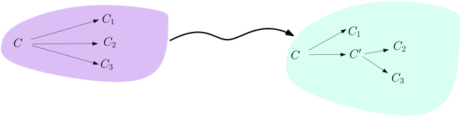
course-TI-2/public/img/turing-machines/nondeterminism/three-to-two-2.svg
Sollte ein Paar
./course-TI-2/wly/08/03-Turing-machine-variants.wly:694:9$(q,c)$./course-TI-2/wly/08/03-Turing-machine-variants.wly:694:25
weniger als zwei./course-TI-2/wly/08/03-Turing-machine-variants.wly:694:32
Folgemöglichkeiten geben, so erfinden wir einfach./course-TI-2/wly/08/03-Turing-machine-variants.wly:695:9
neue, die jedoch direkt
./course-TI-2/wly/08/03-Turing-machine-variants.wly:696:9nach./course-TI-2/wly/08/03-Turing-machine-variants.wly:696:9reject./course-TI-2/wly/08/03-Turing-machine-variants.wly:696:38
führen. Es sollte./course-TI-2/wly/08/03-Turing-machine-variants.wly:696:45
klar sein, dass diese Änderungen rein kosmetisch sind./course-TI-2/wly/08/03-Turing-machine-variants.wly:697:9
und nichts an der Funktionsweise von
./course-TI-2/wly/08/03-Turing-machine-variants.wly:698:9$M$./course-TI-2/wly/08/03-Turing-machine-variants.wly:698:46
ändern. Nun./course-TI-2/wly/08/03-Turing-machine-variants.wly:698:49
bauen wir
./course-TI-2/wly/08/03-Turing-machine-variants.wly:699:9$M$./course-TI-2/wly/08/03-Turing-machine-variants.wly:699:19
um und geben ihr ein zweites Band. Auf./course-TI-2/wly/08/03-Turing-machine-variants.wly:699:22
diesem Band soll ein Wort in
./course-TI-2/wly/08/03-Turing-machine-variants.wly:700:9$\{0,1\}^*$./course-TI-2/wly/08/03-Turing-machine-variants.wly:700:38
stehen. Wir./course-TI-2/wly/08/03-Turing-machine-variants.wly:700:49
machen
./course-TI-2/wly/08/03-Turing-machine-variants.wly:701:9$M$./course-TI-2/wly/08/03-Turing-machine-variants.wly:701:16
deterministisch mit der folgenden Regel:./course-TI-2/wly/08/03-Turing-machine-variants.wly:701:19
wenn Du im Zustand
./course-TI-2/wly/08/03-Turing-machine-variants.wly:702:9$q$./course-TI-2/wly/08/03-Turing-machine-variants.wly:702:28
bist und auf dem ersten Band./course-TI-2/wly/08/03-Turing-machine-variants.wly:702:31
ein
./course-TI-2/wly/08/03-Turing-machine-variants.wly:703:9$c$./course-TI-2/wly/08/03-Turing-machine-variants.wly:703:13
hast und auf dem zweiten Band eine
./course-TI-2/wly/08/03-Turing-machine-variants.wly:703:16$0$./course-TI-2/wly/08/03-Turing-machine-variants.wly:703:52
liest,./course-TI-2/wly/08/03-Turing-machine-variants.wly:703:55
nimm den oberen Pfeil, der von
./course-TI-2/wly/08/03-Turing-machine-variants.wly:704:9$q,c$./course-TI-2/wly/08/03-Turing-machine-variants.wly:704:40
ausgeht; wenn Du./course-TI-2/wly/08/03-Turing-machine-variants.wly:704:45
eine
./course-TI-2/wly/08/03-Turing-machine-variants.wly:705:9$1$./course-TI-2/wly/08/03-Turing-machine-variants.wly:705:14
liest, nimm den unteren Pfeil../course-TI-2/wly/08/03-Turing-machine-variants.wly:705:17
 course-TI-2/public/img/turing-machines/nondeterminism/two-to-det.svg
course-TI-2/public/img/turing-machines/nondeterminism/two-to-det.svg
Falls wir auf dem zweiten Band einem anderen Zeichen./course-TI-2/wly/08/03-Turing-machine-variants.wly:712:9 begegnen ( ./course-TI-2/wly/08/03-Turing-machine-variants.wly:713:9$\square$./course-TI-2/wly/08/03-Turing-machine-variants.wly:713:20 oder sonst etwas, das weder 0./course-TI-2/wly/08/03-Turing-machine-variants.wly:713:29 noch 1 ist), dann lehnen wir sofort ab. Wir haben nun./course-TI-2/wly/08/03-Turing-machine-variants.wly:714:9 eine deterministische Turingmaschine ./course-TI-2/wly/08/03-Turing-machine-variants.wly:715:9$M''$./course-TI-2/wly/08/03-Turing-machine-variants.wly:715:46,./course-TI-2/wly/08/03-Turing-machine-variants.wly:715:51 die./course-TI-2/wly/08/03-Turing-machine-variants.wly:715:51 jedoch nicht das gleiche tut wie ./course-TI-2/wly/08/03-Turing-machine-variants.wly:716:9$M$./course-TI-2/wly/08/03-Turing-machine-variants.wly:716:42 . Aber: wenn./course-TI-2/wly/08/03-Turing-machine-variants.wly:716:45 ./course-TI-2/wly/08/03-Turing-machine-variants.wly:717:9$x \in L(M)$./course-TI-2/wly/08/03-Turing-machine-variants.wly:717:9,./course-TI-2/wly/08/03-Turing-machine-variants.wly:717:21 dann gibt es ein Wort ./course-TI-2/wly/08/03-Turing-machine-variants.wly:717:21$z \in \{0,1\}^*$./course-TI-2/wly/08/03-Turing-machine-variants.wly:717:45,./course-TI-2/wly/08/03-Turing-machine-variants.wly:717:62 ./course-TI-2/wly/08/03-Turing-machine-variants.wly:717:62 das wir auf das zweite Band schreiben ./course-TI-2/wly/08/03-Turing-machine-variants.wly:718:9könnten./course-TI-2/wly/08/03-Turing-machine-variants.wly:718:48,./course-TI-2/wly/08/03-Turing-machine-variants.wly:718:56 so./course-TI-2/wly/08/03-Turing-machine-variants.wly:718:56 dass ./course-TI-2/wly/08/03-Turing-machine-variants.wly:719:9$M''$./course-TI-2/wly/08/03-Turing-machine-variants.wly:719:14 das Eingabewort ./course-TI-2/wly/08/03-Turing-machine-variants.wly:719:19$x$./course-TI-2/wly/08/03-Turing-machine-variants.wly:719:36 akzeptiert. Im./course-TI-2/wly/08/03-Turing-machine-variants.wly:719:39 Gegenzug: wenn ./course-TI-2/wly/08/03-Turing-machine-variants.wly:720:9$x \not \in L(M)$./course-TI-2/wly/08/03-Turing-machine-variants.wly:720:24,./course-TI-2/wly/08/03-Turing-machine-variants.wly:720:41 dann können wir auf./course-TI-2/wly/08/03-Turing-machine-variants.wly:720:41 das zweite Band schreiben, was wir wollen, ./course-TI-2/wly/08/03-Turing-machine-variants.wly:721:9$M''$./course-TI-2/wly/08/03-Turing-machine-variants.wly:721:52 wird./course-TI-2/wly/08/03-Turing-machine-variants.wly:721:57 immer ablehnen../course-TI-2/wly/08/03-Turing-machine-variants.wly:722:9
 course-TI-2/public/img/turing-machines/det-simulates-nondet/01.svg
course-TI-2/public/img/turing-machines/det-simulates-nondet/01.svg
course-TI-2/public/img/turing-machines/det-simulates-nondet/02.svg
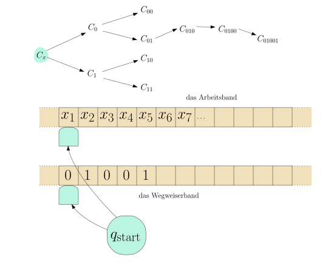
course-TI-2/public/img/turing-machines/det-simulates-nondet/03.svg course-TI-2/public/img/turing-machines/det-simulates-nondet/04.svg
course-TI-2/public/img/turing-machines/det-simulates-nondet/04.svg
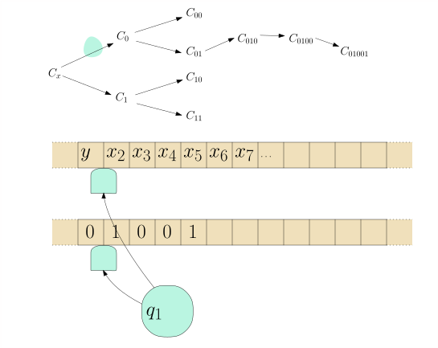
course-TI-2/public/img/turing-machines/det-simulates-nondet/05.svg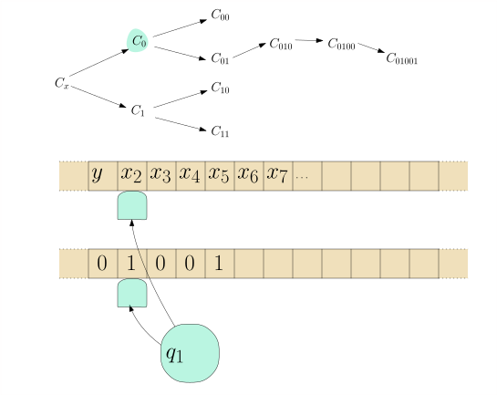
course-TI-2/public/img/turing-machines/det-simulates-nondet/06.svg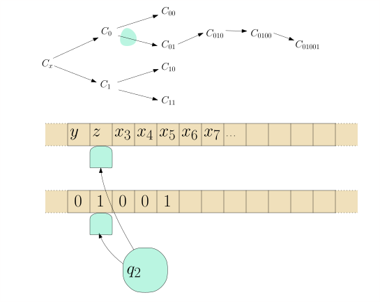
course-TI-2/public/img/turing-machines/det-simulates-nondet/07.svg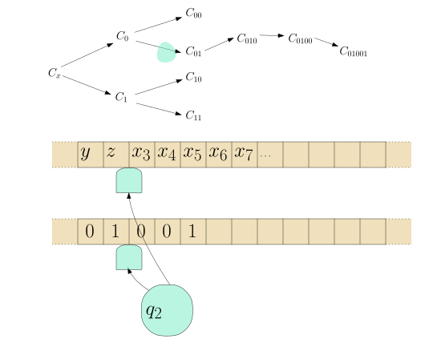
course-TI-2/public/img/turing-machines/det-simulates-nondet/08.svg course-TI-2/public/img/turing-machines/det-simulates-nondet/09.svg
course-TI-2/public/img/turing-machines/det-simulates-nondet/09.svg
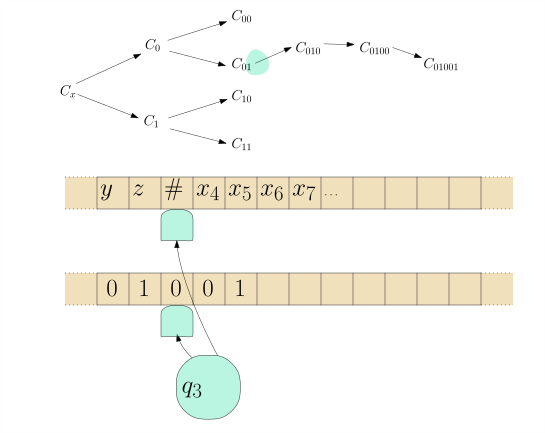
course-TI-2/public/img/turing-machines/det-simulates-nondet/10.svg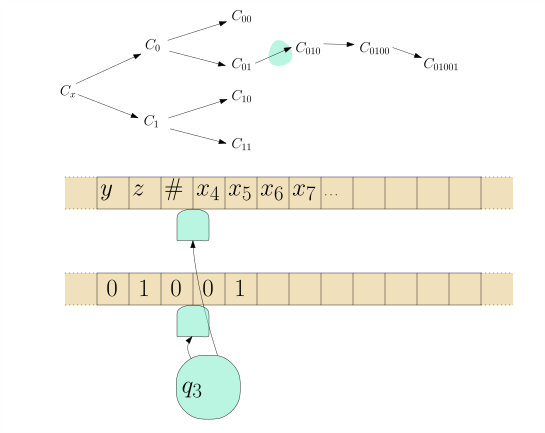
course-TI-2/public/img/turing-machines/det-simulates-nondet/11.svg
course-TI-2/public/img/turing-machines/det-simulates-nondet/12.svg
 course-TI-2/public/img/turing-machines/det-simulates-nondet/13.svg
course-TI-2/public/img/turing-machines/det-simulates-nondet/13.svg
 course-TI-2/public/img/turing-machines/det-simulates-nondet/14.svg
course-TI-2/public/img/turing-machines/det-simulates-nondet/14.svg
Nun bauen wir schlussendlich eine Maschine ./course-TI-2/wly/08/03-Turing-machine-variants.wly:741:9$M'$./course-TI-2/wly/08/03-Turing-machine-variants.wly:741:52,./course-TI-2/wly/08/03-Turing-machine-variants.wly:741:56 die./course-TI-2/wly/08/03-Turing-machine-variants.wly:741:56 in einer Endlosschleife alle möglichen./course-TI-2/wly/08/03-Turing-machine-variants.wly:742:9 ./course-TI-2/wly/08/03-Turing-machine-variants.wly:743:9$z \in \{0,1\}^*$./course-TI-2/wly/08/03-Turing-machine-variants.wly:743:9 aufzählt, auf das zweite Band./course-TI-2/wly/08/03-Turing-machine-variants.wly:743:26 schreibt, und ./course-TI-2/wly/08/03-Turing-machine-variants.wly:744:9$M''$./course-TI-2/wly/08/03-Turing-machine-variants.wly:744:23 neustartet. Geht das? Wir können./course-TI-2/wly/08/03-Turing-machine-variants.wly:744:28 zum Beispiel ./course-TI-2/wly/08/03-Turing-machine-variants.wly:745:9$i = 1,2,3,4,\dots$./course-TI-2/wly/08/03-Turing-machine-variants.wly:745:22 hochzählen, binär./course-TI-2/wly/08/03-Turing-machine-variants.wly:745:41 schreiben und die führende 1 löschen. Überzeugen Sie./course-TI-2/wly/08/03-Turing-machine-variants.wly:746:9 sich, dass in dieser Reihe wirklich alle./course-TI-2/wly/08/03-Turing-machine-variants.wly:747:9 ./course-TI-2/wly/08/03-Turing-machine-variants.wly:748:9$z \in \{0,1\}^*$./course-TI-2/wly/08/03-Turing-machine-variants.wly:748:9 vorkommen../course-TI-2/wly/08/03-Turing-machine-variants.wly:748:26A\(\square\)